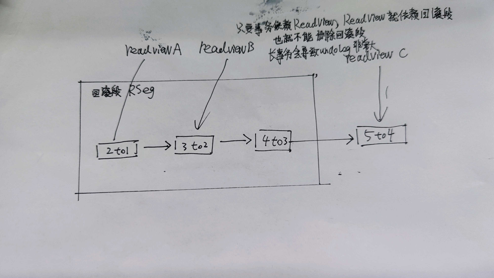
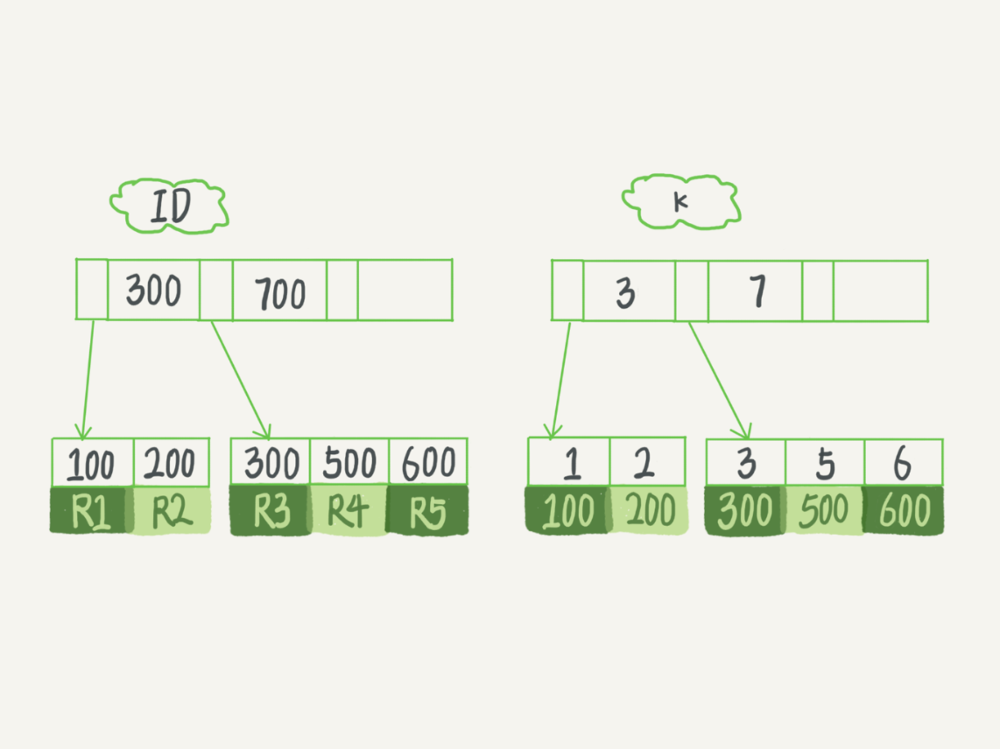
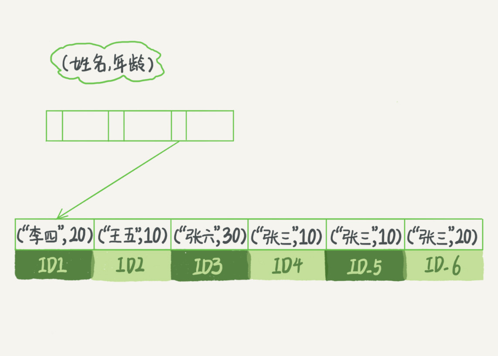
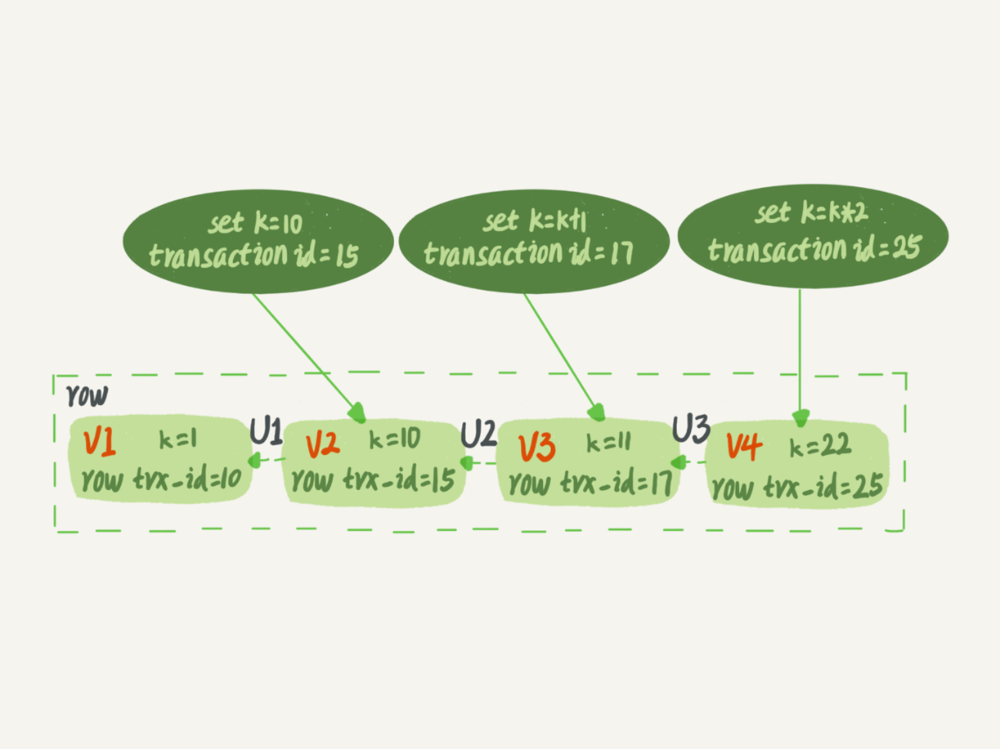
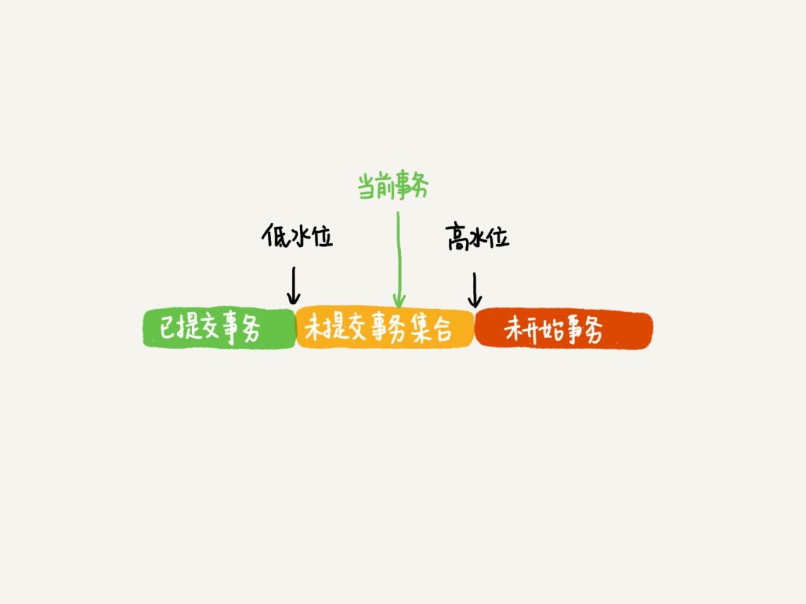
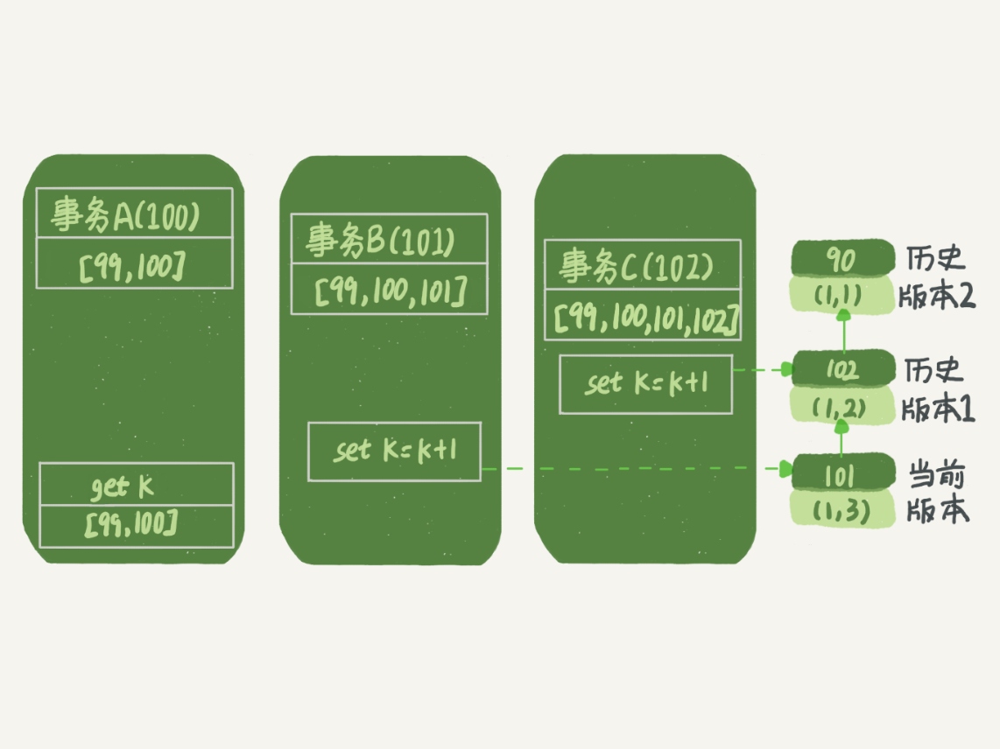
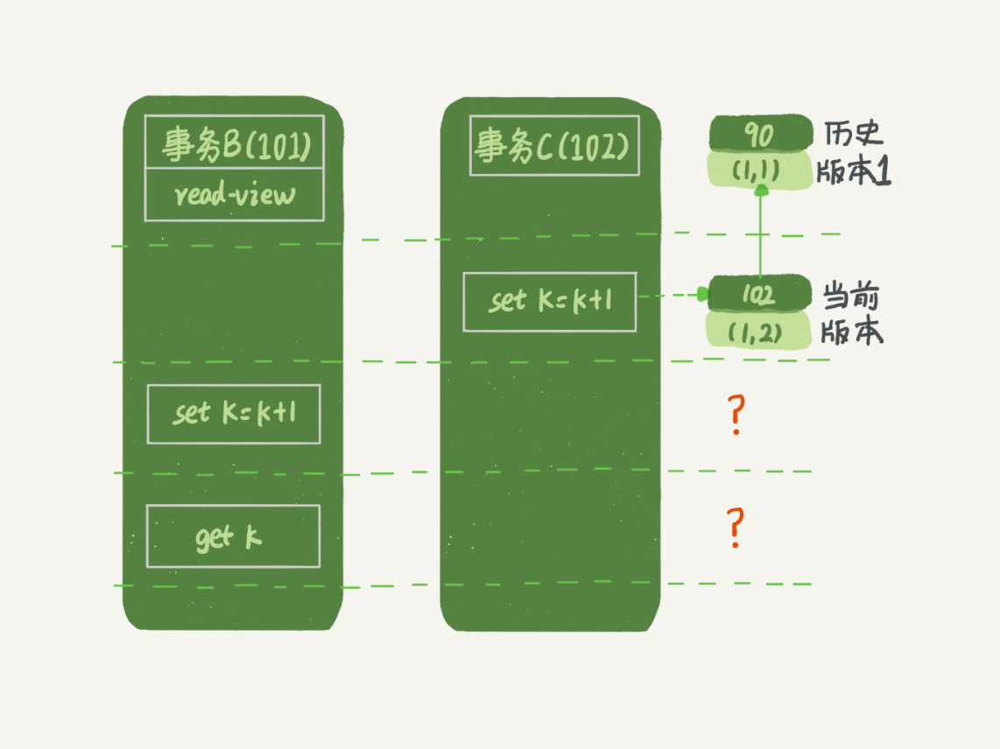
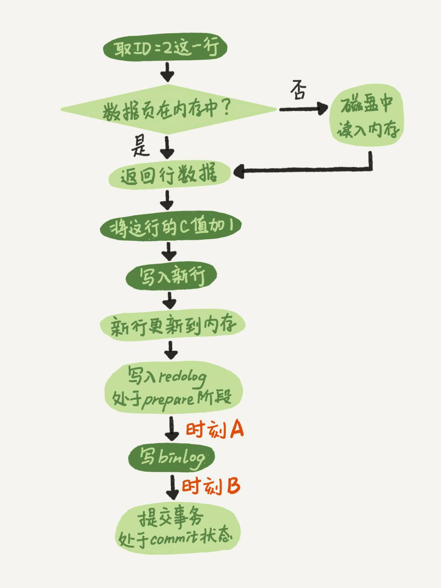

<!DOCTYPE html>
<html>
<head><meta name="generator" content="Hexo 3.9.0">
  <meta charset="utf-8">
  
  <title>MySQL实战45讲 | 守株阁</title>
  <meta name="viewport" content="width=device-width, initial-scale=1, maximum-scale=1">
  <meta name="description" content="01 | 基础架构：一条SQL查询语句是如何执行的？连接器管 tcp 连接。全局的权限、配置的修改不会直接在存量 session 里生效。 show processlist 可以显示 Sleep status 的空闲连接。这个命令看起来是管理 process，其实是管理 session。 默认的连接断开时间是 8 小时，是由参数 wait_timeout 控制的。  建立连接的过程通常是比较复杂的">
<meta name="keywords" content="数据库,MySQL,存储">
<meta property="og:type" content="article">
<meta property="og:title" content="MySQL实战45讲">
<meta property="og:url" content="http://yoursite.com/2021/03/10/MySQL实战45讲/index.html">
<meta property="og:site_name" content="守株阁">
<meta property="og:description" content="01 | 基础架构：一条SQL查询语句是如何执行的？连接器管 tcp 连接。全局的权限、配置的修改不会直接在存量 session 里生效。 show processlist 可以显示 Sleep status 的空闲连接。这个命令看起来是管理 process，其实是管理 session。 默认的连接断开时间是 8 小时，是由参数 wait_timeout 控制的。  建立连接的过程通常是比较复杂的">
<meta property="og:locale" content="zh-Hans">
<meta property="og:image" content="http://yoursite.com/2021/03/10/MySQL实战45讲/readview-依赖于回滚.jpg">
<meta property="og:image" content="http://yoursite.com/2021/03/10/MySQL实战45讲/InnoDB的索引组织结构.png">
<meta property="og:image" content="http://yoursite.com/2021/03/10/MySQL实战45讲/name-age-index示意图.jpg">
<meta property="og:image" content="http://yoursite.com/2021/03/10/MySQL实战45讲/行状态变更图.png">
<meta property="og:image" content="http://yoursite.com/2021/03/10/MySQL实战45讲/数据版本可见性规则.png">
<meta property="og:image" content="http://yoursite.com/2021/03/10/MySQL实战45讲/事务A查询数据逻辑图.png">
<meta property="og:image" content="http://yoursite.com/2021/03/10/MySQL实战45讲/事务b更新逻辑.png">
<meta property="og:image" content="http://yoursite.com/2021/03/10/MySQL实战45讲/事务B更新逻辑图（配合事务%20C）.png">
<meta property="og:image" content="http://yoursite.com/2021/03/10/MySQL实战45讲/两阶段提交的a-b阶段.jpeg">
<meta property="og:updated_time" content="2021-03-30T12:00:17.284Z">
<meta name="twitter:card" content="summary">
<meta name="twitter:title" content="MySQL实战45讲">
<meta name="twitter:description" content="01 | 基础架构：一条SQL查询语句是如何执行的？连接器管 tcp 连接。全局的权限、配置的修改不会直接在存量 session 里生效。 show processlist 可以显示 Sleep status 的空闲连接。这个命令看起来是管理 process，其实是管理 session。 默认的连接断开时间是 8 小时，是由参数 wait_timeout 控制的。  建立连接的过程通常是比较复杂的">
<meta name="twitter:image" content="http://yoursite.com/2021/03/10/MySQL实战45讲/readview-依赖于回滚.jpg">
  
    <link rel="alternate" href="/atom.xml" title="守株阁" type="application/atom+xml">
  
  
    <link rel="icon" href="/favicon.png">
  
  
  <link rel="stylesheet" href="/css/style.css">
  

<link rel="stylesheet" href="/css/prism.css" type="text/css">
<link rel="stylesheet" href="/css/prism-line-numbers.css" type="text/css"></head>
</html>
<body>
  <div id="container">
    <div id="wrap">
      <header id="header">
  <div id="banner"></div>
  <div id="header-outer" class="outer">
    
    <div id="header-inner" class="inner">
      <nav id="sub-nav">
        
          <a id="nav-rss-link" class="nav-icon" href="/atom.xml" title="RSS Feed"></a>
        
        <a id="nav-search-btn" class="nav-icon" title="搜索"></a>
      </nav>
      <div id="search-form-wrap">
        <form action="//google.com/search" method="get" accept-charset="UTF-8" class="search-form"><input type="search" name="q" class="search-form-input" placeholder="Search"><button type="submit" class="search-form-submit">&#xF002;</button><input type="hidden" name="sitesearch" value="http://yoursite.com"></form>
      </div>
      <nav id="main-nav">
        <a id="main-nav-toggle" class="nav-icon"></a>
        
          <a class="main-nav-link" href="/">首页</a>
        
          <a class="main-nav-link" href="/archives">归档</a>
        
          <a class="main-nav-link" href="/about">关于</a>
        
      </nav>
      
    </div>
    <div id="header-title" class="inner">
      <h1 id="logo-wrap">
        <a href="/" id="logo">守株阁</a>
      </h1>
      
        <h2 id="subtitle-wrap">
          <a href="/" id="subtitle">一切都是守株待兔，如切如磋，如琢如磨。I am just joking.</a>
        </h2>
      
    </div>
  </div>
</header>
      <div class="outer">
        <section id="main"><article id="post-MySQL实战45讲" class="article article-type-post" itemscope itemprop="blogPost">
  <div class="article-meta">
    <a href="/2021/03/10/MySQL实战45讲/" class="article-date">
  <time datetime="2021-03-10T06:53:58.000Z" itemprop="datePublished">2021-03-10</time>
</a>
    
  </div>
  <div class="article-inner">
    
    
      <header class="article-header">
        
  
    <h1 class="article-title" itemprop="name">
      MySQL实战45讲
    </h1>
  

      </header>
    
    <div class="article-entry" itemprop="articleBody">
      
        <!-- Table of Contents -->
        
        <h1 id="01-基础架构：一条SQL查询语句是如何执行的？"><a href="#01-基础架构：一条SQL查询语句是如何执行的？" class="headerlink" title="01 | 基础架构：一条SQL查询语句是如何执行的？"></a>01 | 基础架构：一条SQL查询语句是如何执行的？</h1><p>连接器管 tcp 连接。全局的权限、配置的修改不会直接在存量 session 里生效。</p>
<p>show processlist 可以显示 Sleep status 的空闲连接。这个命令看起来是管理 process，其实是管理 session。</p>
<p>默认的连接断开时间是 8 小时，是由参数 wait_timeout 控制的。</p>
<blockquote>
<p>建立连接的过程通常是比较复杂的，所以我建议你在使用中要尽量减少建立连接的动作，也就是尽量使用长连接。</p>
</blockquote>
<p>长连接会把本连接临时使用的内存管理在连接对象里（类似 ThreadLocal 之于线程），这些资源在连接断开的时候才释放，解决方案就是：</p>
<ol>
<li><p>定期断开长连接。使用一段时间，或者程序里面判断执行过一个占用内存的大查询后，断开连接，之后要查询再重连。</p>
</li>
<li><p>如果你用的是MySQL 5.7或更新版本，可以在每次执行一个比较大的操作后，通过执行 mysql_reset_connection来重新初始化连接资源。这个过程不需要重连和重新做权限验证，但是会将连接恢复到刚刚创建完时的状态。</p>
</li>
</ol>
<p>MySQL 8.0 以后不会再有查询缓存了。</p>
<h1 id="02-日志系统：一条SQL更新语句是如何执行的？"><a href="#02-日志系统：一条SQL更新语句是如何执行的？" class="headerlink" title="02 | 日志系统：一条SQL更新语句是如何执行的？"></a>02 | 日志系统：一条SQL更新语句是如何执行的？</h1><h2 id="重要的日志模块：redo-log"><a href="#重要的日志模块：redo-log" class="headerlink" title="重要的日志模块：redo log"></a>重要的日志模块：redo log</h2><p>redo log 是 WAL 日志模块。一个事务会把变更写入内存 + Redo log，然后后台线程再把变更更新到磁盘中。</p>
<p>redo log 通常 4 个 1gb 的文件，在写入一个文件满，或者到达 checkpoint 以后，会 flush 数据到磁盘。checkpoint 的意思是，过了这个点，数据的原地变更已经完成（之前的 redo log 不需要再 apply）。</p>
<p> 有了 redo log，就有 crash-safe。</p>
<h2 id="重要的日志模块：binlog"><a href="#重要的日志模块：binlog" class="headerlink" title="重要的日志模块：binlog"></a>重要的日志模块：binlog</h2><p>两种日志有以下不同：</p>
<p>redo log是InnoDB引擎特有的；binlog是MySQL的Server层实现的，所有引擎都可以使用。</p>
<p>redo log是物理日志，记录的是“在某个数据页上做了什么修改”；binlog是逻辑日志，记录的是这个语句的原始逻辑，比如“给ID=2这一行的c字段加1 ”。</p>
<p>redo log是循环写的，空间固定会用完；binlog是可以追加写入的。“追加写”是指binlog文件写到一定大小后会切换到下一个，并不会覆盖以前的日志。</p>
<p>redo log 的两阶段提交：</p>
<ol>
<li><p>执行器先找引擎取ID=2这一行。ID是主键，引擎直接用树搜索找到这一行。如果ID=2这一行所在的数据页本来就在内存中，就直接返回给执行器；否则，需要先从磁盘读入内存，然后再返回。</p>
</li>
<li><p>执行器拿到引擎给的行数据，把这个值加上1，比如原来是N，现在就是N+1，得到新的一行数据，再调用引擎接口写入这行新数据。</p>
</li>
<li><p>引擎将这行新数据更新到内存中，同时将这个更新操作记录到redo log里面，此时redo log处于prepare状态。然后告知执行器执行完成了，随时可以提交事务。</p>
</li>
<li><p>执行器生成这个操作的binlog，并把binlog写入磁盘。</p>
</li>
<li><p>执行器调用引擎的提交事务接口，引擎把刚刚写入的redo log改成提交（commit）状态，更新完成。</p>
</li>
</ol>
<p>prepare 和 commit 的两阶段提交在 MySQL 的本地事务上也有，不独分布式事务上有。但 MySQL 内部自己也有分布式事务。</p>
<h2 id="两阶段提交"><a href="#两阶段提交" class="headerlink" title="两阶段提交"></a>两阶段提交</h2><p>binlog 本身意味着可以配合备份恢复丢失的记录-这和 redo log 的功能有些像。</p>
<p>由于redo log和binlog是两个独立的逻辑，如果不用两阶段提交，要么就是先写完redo log再写binlog，或者采用反过来的顺序。我们看看这两种方式会有什么问题。</p>
<p>仍然用前面的update语句来做例子。假设当前ID=2的行，字段c的值是0，再假设执行update语句过程中在写完第一个日志后，第二个日志还没有写完期间发生了crash，会出现什么情况呢？</p>
<p>先写redo log后写binlog。假设在redo log写完，binlog还没有写完的时候，MySQL进程异常重启。由于我们前面说过的，redo log写完之后，系统即使崩溃，仍然能够把数据恢复回来，所以恢复后这一行c的值是1。<br>但是由于binlog没写完就crash了，这时候binlog里面就没有记录这个语句。因此，之后备份日志的时候，存起来的binlog里面就没有这条语句。<br>然后你会发现，如果需要用这个binlog来恢复临时库的话，由于这个语句的binlog丢失，这个临时库就会少了这一次更新，恢复出来的这一行c的值就是0，与原库的值不同。</p>
<p>先写binlog后写redo log。如果在binlog写完之后crash，由于redo log还没写，崩溃恢复以后这个事务无效，所以这一行c的值是0。但是binlog里面已经记录了“把c从0改成1”这个日志。所以，在之后用binlog来恢复的时候就多了一个事务出来，恢复出来的这一行c的值就是1，与原库的值不同。</p>
<p>可以看到，如果不使用“两阶段提交”，那么数据库的状态就有可能和用它的日志恢复出来的库的状态不一致。</p>
<h2 id="小结"><a href="#小结" class="headerlink" title="小结"></a>小结</h2><p>我还跟你介绍了与MySQL日志系统密切相关的“两阶段提交”。<strong>两阶段提交是跨系统维持数据逻辑一致性时常用的一个方案</strong>，即使你不做数据库内核开发，日常开发中也有可能会用到。</p>
<p>近端 prepare -&gt; 远端写 -&gt; 成功后近端 commit</p>
<p>数据库一天一备好，还是一周一备好？一天一备，需要一天的 binlog；一周一备，需要一周的 binlog。<strong>binlog 越多 RTO（恢复目标时间）越长，binlog 越少，要存储备份需要的空间越多。</strong></p>
<h1 id="03-事务隔离：为什么你改了我还看不见？"><a href="#03-事务隔离：为什么你改了我还看不见？" class="headerlink" title="03 | 事务隔离：为什么你改了我还看不见？"></a>03 | 事务隔离：为什么你改了我还看不见？</h1><p>提到事务，你肯定不陌生，和数据库打交道的时候，我们总是会用到事务。最经典的例子就是转账，你要给朋友小王转100块钱，而此时你的银行卡只有100块钱。</p>
<p>转账过程具体到程序里会有一系列的操作，比如查询余额、做加减法、更新余额等，这些操作必须保证是一体的，不然等程序查完之后，还没做减法之前，你这100块钱，完全可以借着这个时间差再查一次，然后再给另外一个朋友转账，如果银行这么整，不就乱了么？这时就要用到“事务”这个概念了。</p>
<p>简单来说，事务就是要保证一组数据库操作，要么全部成功，要么全部失败。</p>
<p>而且在全部成功和失败以前，不能读到中间状态，要模拟并发编程的原子性。</p>
<h2 id="事务隔离的实现"><a href="#事务隔离的实现" class="headerlink" title="事务隔离的实现"></a>事务隔离的实现</h2><p>按照<a href="http://mysql.taobao.org/monthly/2015/04/01/" target="_blank" rel="noopener">阿里数据库月报</a>的分析，可见性的 readview 的数据来源是：</p>
<blockquote>
<p>由于在修改聚集索引记录时，总是存储了回滚段指针和事务id，可以通过该指针找到对应的undo<br>记录，通过事务Id来判断记录的可见性。当旧版本记录中的事务id对当前事务而言是不可见时，则继续向前构建，直到找到一个可见的记录或者到达版本链尾部。（关于事务可见性及read<br>view，可以参阅我们之前的月报）</p>
</blockquote>
<p>当前值是4，但是在查询这条记录的时候，不同时刻启动的事务会有不同的read-view。如图中看到的，在视图A、B、C里面，这一个记录的值分别是1、2、4，同一条记录在系统中可以存在多个版本，就是数据库的多版本并发控制（MVCC）。<strong>对于read-view A，要得到1，就必须将当前值依次执行图中所有的回滚操作得到</strong>。</p>
<blockquote>
<p>长事务意味着系统里面会存在很老的事务视图。由于这些事务随时可能访问数据库里面的任何数据，所以这个事务提交之前，数据库里面它可能用到的回滚记录都必须保留，这就会导致大量占用存储空间。</p>
<p>在MySQL<br>5.5及以前的版本，回滚日志是跟数据字典一起放在ibdata文件里的，即使长事务最终提交，回滚段被清理，文件也不会变小。我见过数据只有20GB，而回滚段有200GB的库。最终只好为了清理回滚段，重建整个库。</p>
</blockquote>
<p></p>
<h2 id="事务的启动方式"><a href="#事务的启动方式" class="headerlink" title="事务的启动方式"></a>事务的启动方式</h2><blockquote>
<p>如前面所述，长事务有这些潜在风险，我当然是建议你尽量避免。其实很多时候业务开发同学并不是有意使用长事务，通常是由于误用所致。MySQL的事务启动方式有以下几种：</p>
<p>显式启动事务语句， begin 或 start transaction。配套的提交语句是commit，回滚语句是rollback。</p>
<p>set<br>autocommit=0，这个命令会将这个线程的自动提交关掉。意味着如果你只执行一个select语句，这个事务就启动了，而且并不会自动提交。这个事务持续存在直到你主动执行commit<br>或 rollback 语句，或者断开连接。</p>
<p>有些客户端连接框架会默认连接成功后先执行一个set<br>autocommit=0的命令。这就导致接下来的查询都在事务中，如果是长连接，就导致了意外的长事务。</p>
<p>因此，我会建议你总是使用set autocommit=1, 通过显式语句的方式来启动事务。</p>
<p>但是有的开发同学会纠结“多一次交互”的问题。对于一个需要频繁使用事务的业务，第二种方式每个事务在开始时都不需要主动执行一次<br>“begin”，减少了语句的交互次数。如果你也有这个顾虑，我建议你使用commit work and chain语法。</p>
<p>在autocommit为1的情况下，用begin显式启动的事务，如果执行commit则提交事务。如果执行 commit work and<br>chain，则是提交事务并自动启动下一个事务，这样也省去了再次执行begin语句的开销。同时带来的好处是从程序开发的角度明确地知道每个语句是否处于事务中。</p>
</blockquote>
<h1 id="5-04-深入浅出索引（上）"><a href="#5-04-深入浅出索引（上）" class="headerlink" title="5 04 | 深入浅出索引（上）"></a>5 04 | 深入浅出索引（上）</h1><ol>
<li>哈希表这种结构适用于只有等值查询的场景，比如Memcached及其他一些NoSQL引擎。</li>
<li>有序数组索引只适用于静态存储引擎，在等值查询和范围查询场景中的性能就都非常优秀。</li>
<li>不管是哈希还是有序数组，或者N叉树，它们都是不断迭代、不断优化的产物或者解决方案。数据库技术发展到今天，跳表、LSM树等数据结构也被用于引擎设计中，这里我就不再一一展开了。你心里要有个概念，数据库底层存储的核心就是基于这些数据模型的。每碰到一个新数据库，我们需要先关注它的数据模型，这样才能从理论上分析出这个数据库的适用场景。</li>
</ol>
<p></p>
<p>基于非主键索引的查询需要多扫描一棵索引树。因此，我们在应用中应该尽量使用主键查询。</p>
<p>显然，主键长度越小，普通索引的叶子节点就越小，普通索引占用的空间也就越小。</p>
<p>所以，从性能和存储空间方面考量，自增主键往往是更合理的选择。</p>
<p>有没有什么场景适合用业务字段直接做主键的呢？还是有的。比如，有些业务的场景需求是这样的：</p>
<ol>
<li>只有一个索引；</li>
<li>该索引必须是唯一索引。</li>
</ol>
<p>你一定看出来了，这就是典型的KV场景。</p>
<h1 id="6-05-深入浅出索引（下）"><a href="#6-05-深入浅出索引（下）" class="headerlink" title="6 05 | 深入浅出索引（下）"></a>6 05 | 深入浅出索引（下）</h1><p></p>
<p>这里我们的评估标准是，索引的复用能力。因为可以支持最左前缀，所以当已经有了(a,b)这个联合索引后，一般就不需要单独在a上建立索引了。因此，第一原则是，如果通过调整顺序，可以少维护一个索引，那么这个顺序往往就是需要优先考虑采用的。</p>
<p>所以现在你知道了，这段开头的问题里，我们要为高频请求创建(身份证号，姓名）这个联合索引，并用这个索引支持“根据身份证号查询地址”的需求。</p>
<p>那么，如果既有联合查询，又有基于a、b各自的查询呢？查询条件里面只有b的语句，是无法使用(a,b)这个联合索引的，这时候你不得不维护另外一个索引，也就是说你需要同时维护(a,b)、(b) 这两个索引。</p>
<p>这时候，我们要考虑的原则就是空间了。比如上面这个市民表的情况，name字段是比age字段大的 ，那我就建议你创建一个（name,age)的联合索引和一个(age)的单字段索引。</p>
<p>而MySQL 5.6 引入的索引下推优化（index condition pushdown)， 可以在索引遍历过程中，对索引中包含的字段先做判断（<strong>所以当代的 where 语句，只要能够在索引里过滤，就不会在 server 层过滤</strong>），直接过滤掉不满足条件的记录，减少回表次数。</p>
<p>可以使用<code>alter table T engine=InnoDB</code>来重建主键，不必先删除主键再重建主键（理论上可以重建任意主键）。</p>
<h1 id="7-06-全局锁和表锁-：给表加个字段怎么有这么多阻碍？"><a href="#7-06-全局锁和表锁-：给表加个字段怎么有这么多阻碍？" class="headerlink" title="7 06 | 全局锁和表锁 ：给表加个字段怎么有这么多阻碍？"></a>7 06 | 全局锁和表锁 ：给表加个字段怎么有这么多阻碍？</h1><blockquote>
<p>顾名思义，全局锁就是对整个数据库实例加锁。MySQL提供了一个加全局读锁的方法，命令是 Flush tables with read<br>lock<br>(FTWRL)。当你需要让整个库处于只读状态的时候，可以使用这个命令，之后其他线程的以下语句会被阻塞：数据更新语句（数据的增删改）、数据定义语句（包括建表、修改表结构等）和更新类事务的提交语句。</p>
<p>全局锁的典型使用场景是，做全库逻辑备份。也就是把整库每个表都select出来存成文本。</p>
<p>官方自带的逻辑备份工具是mysqldump。当mysqldump使用参数–single-transaction的时候，导数据之前就会启动一个事务，来确保拿到一致性视图。而由于MVCC的支持，这个过程中数据是可以正常更新的。</p>
<p>你一定在疑惑，有了这个功能，为什么还需要FTWRL呢？一致性读是好，但前提是引擎要支持这个隔离级别。比如，对于MyISAM这种不支持事务的引擎，如果备份过程中有更新，总是只能取到最新的数据，那么就破坏了备份的一致性。这时，我们就需要使用FTWRL命令了。</p>
<p>所以，single-transaction方法只适用于所有的表使用事务引擎的库。如果有的表使用了不支持事务的引擎，那么备份就只能通过FTWRL方法。这往往是DBA要求业务开发人员使用InnoDB替代MyISAM的原因之一。</p>
<p>你也许会问，既然要全库只读，为什么不使用set global<br>readonly=true的方式呢？确实readonly方式也可以让全库进入只读状态，但我还是会建议你用FTWRL方式，主要有两个原因：</p>
</blockquote>
<blockquote>
<p>一是，在有些系统中，readonly的值会被用来做其他逻辑，比如用来判断一个库是主库还是备库。因此，修改global变量的方式影响面更大，我不建议你使用。<br>二是，在异常处理机制上有差异。如果执行FTWRL命令之后由于客户端发生异常断开，那么MySQL会自动释放这个全局锁，整个库回到可以正常更新的状态。而将整个库设置为readonly之后，如果客户端发生异常，则数据库就会一直保持readonly状态，这样会导致整个库长时间处于不可写状态，风险较高。<br>业务的更新不只是增删改数据（DML)，还有可能是加字段等修改表结构的操作（DDL）。不论是哪种方法，一个库被全局锁上以后，你要对里面任何一个表做加字段操作，都是会被锁住的。</p>
<p>但是，即使没有被全局锁住，加字段也不是就能一帆风顺的，因为你还会碰到接下来我们要介绍的表级锁。</p>
</blockquote>
<p>FTWRL 也可以用来做主从切换。</p>
<blockquote>
<p>MySQL里面表级别的锁有两种：一种是表锁，一种是元数据锁（meta data lock，MDL)。</p>
<p>表锁的语法是 lock tables … read/write。与FTWRL类似，可以用unlock<br>tables主动释放锁，也可以在客户端断开的时候自动释放。需要注意，lock<br>tables语法除了会限制别的线程的读写外，也限定了本线程接下来的操作对象。</p>
<p>举个例子, 如果在某个线程A中执行lock tables t1 read, t2 write;<br>这个语句，则其他线程写t1、读写t2的语句都会被阻塞。同时，线程A在执行unlock<br>tables之前，也只能执行读t1、读写t2的操作。连写t1都不允许，自然也不能访问其他表。</p>
<p>在还没有出现更细粒度的锁的时候，表锁是最常用的处理并发的方式。而对于InnoDB这种支持行锁的引擎，一般不使用lock<br>tables命令来控制并发，毕竟锁住整个表的影响面还是太大。</p>
<p>另一类表级的锁是MDL（metadata<br>lock)。MDL不需要显式使用，在访问一个表的时候会被自动加上。MDL的作用是，保证读写的正确性。你可以想象一下，如果一个查询正在遍历一个表中的数据，而执行期间另一个线程对这个表结构做变更，删了一列，那么查询线程拿到的结果跟表结构对不上，肯定是不行的。</p>
<p>因此，在MySQL 5.5版本中引入了MDL，当对一个表做增删改查操作的时候，加MDL读锁；当要对表做结构变更操作的时候，加MDL写锁。</p>
<p>读锁之间不互斥，因此你可以有多个线程同时对一张表增删改查。</p>
<p>读写锁之间、写锁之间是互斥的，用来保证变更表结构操作的安全性。因此，如果有两个线程要同时给一个表加字段，其中一个要等另一个执行完才能开始执行。</p>
</blockquote>
<p><strong>所有对表的增删改查操作都需要先申请MDL读锁，就都被锁住，等于这个表现在完全不可读写了。这也是高负载的服务器很难发生备份的原因，备份连接一直都求不到 MDL 锁</strong></p>
<blockquote>
<p>基于上面的分析，我们来讨论一个问题，如何安全地给小表加字段？</p>
<p>首先我们要解决长事务，事务不提交，就会一直占着MDL锁。在MySQL的information_schema 库的 innodb_trx<br>表中，你可以查到当前执行中的事务。如果你要做DDL变更的表刚好有长事务在执行，要考虑先暂停DDL，或者kill掉这个长事务。</p>
<p>但考虑一下这个场景。如果你要变更的表是一个热点表，虽然数据量不大，但是上面的请求很频繁，而你不得不加个字段，你该怎么做呢？</p>
<p>这时候kill可能未必管用，因为新的请求马上就来了。比较理想的机制是，在alter<br>table语句里面设定等待时间，如果在这个指定的等待时间里面能够拿到MDL写锁最好，拿不到也不要阻塞后面的业务语句，先放弃。之后开发人员或者DBA再通过重试命令重复这个过程。</p>
<p>MariaDB已经合并了AliSQL的这个功能，所以这两个开源分支目前都支持DDL NOWAIT/WAIT n这个语法。</p>
<p>ALTER TABLE tbl_name NOWAIT add column … ALTER TABLE tbl_name WAIT N<br>add column …</p>
</blockquote>
<p>非阻塞等待、计时等待很重要</p>
<h1 id="8-07-行锁功过：怎么减少行锁对性能的影响？"><a href="#8-07-行锁功过：怎么减少行锁对性能的影响？" class="headerlink" title="8 07 | 行锁功过：怎么减少行锁对性能的影响？"></a>8 07 | 行锁功过：怎么减少行锁对性能的影响？</h1><p>MySQL的行锁是在引擎层由各个引擎自己实现的。但并不是所有的引擎都支持行锁，比如MyISAM引擎就不支持行锁。不支持行锁意味着并发控制只能使用表锁，对于这种引擎的表，同一张表上任何时刻只能有一个更新在执行，这就会影响到业务并发度。InnoDB是支持行锁的，这也是MyISAM被InnoDB替代的重要原因之一。</p>
<h2 id="从两阶段锁说起"><a href="#从两阶段锁说起" class="headerlink" title="从两阶段锁说起"></a>从两阶段锁说起</h2><blockquote>
<p>这个问题的结论取决于事务A在执行完两条update语句后，持有哪些锁，以及在什么时候释放。你可以验证一下：实际上事务B的update语句会被阻塞，直到事务A执行commit之后，事务B才能继续执行。</p>
<p>知道了这个答案，你一定知道了事务A持有的两个记录的行锁，都是在commit的时候才释放的。</p>
<p>也就是说，在InnoDB事务中，行锁是在需要的时候才加上的，但并不是不需要了就立刻释放，而是要等到事务结束时才释放。这个就是两阶段锁协议。</p>
<p>知道了这个设定，对我们使用事务有什么帮助呢？那就是，如果你的事务中需要锁多个行，要把最可能造成锁冲突、最可能影响并发度的锁尽量往后放。我给你举个例子。</p>
<p>假设你负责实现一个电影票在线交易业务，顾客A要在影院B购买电影票。我们简化一点，这个业务需要涉及到以下操作：</p>
<p>从顾客A账户余额中扣除电影票价；</p>
<p>给影院B的账户余额增加这张电影票价；</p>
<p>记录一条交易日志。</p>
<p>也就是说，要完成这个交易，我们需要update两条记录，并insert一条记录。当然，为了保证交易的原子性，我们要把这三个操作放在一个事务中。那么，你会怎样安排这三个语句在事务中的顺序呢？</p>
<p>试想如果同时有另外一个顾客C要在影院B买票，那么这两个事务冲突的部分就是语句2了。因为它们要更新同一个影院账户的余额，需要修改同一行数据。</p>
<p>根据两阶段锁协议，不论你怎样安排语句顺序，所有的操作需要的行锁都是在事务提交的时候才释放的。所以，如果你把语句2安排在最后，比如按照3、1、2这样的顺序，那么影院账户余额这一行的锁时间就最少。这就最大程度地减少了事务之间的锁等待，提升了并发度。</p>
<p>好了，现在由于你的正确设计，影院余额这一行的行锁在一个事务中不会停留很长时间。但是，这并没有完全解决你的困扰。</p>
</blockquote>
<p>MySQL 处理死锁的方式有 2：</p>
<ol>
<li>看哪个事务先达到 innodb_lock_wait_timeout 定义的超时，自己回滚。</li>
<li>发起死锁检测，发现死锁后，主动回滚死锁链条中的某一个事务，让其他事务得以继续执行。将参数innodb_deadlock_detect设置为on，表示开启这个逻辑。</li>
</ol>
<blockquote>
<p>每个新来的被堵住的线程，都要判断会不会由于自己的加入导致了死锁，这是一个时间复杂度是O(n)的操作。假设有1000个并发线程要同时更新同一行，那么死锁检测操作就是100万这个量级的。虽然最终检测的结果是没有死锁，但是这期间要消耗大量的CPU资源。因此，你就会看到CPU利用率很高，但是每秒却执行不了几个事务。</p>
</blockquote>
<blockquote>
<p>你可以考虑通过将一行改成逻辑上的多行来减少锁冲突。还是以影院账户为例，可以考虑放在多条记录上，比如10个记录，影院的账户总额等于这10个记录的值的总和。这样每次要给影院账户加金额的时候，随机选其中一条记录来加。这样每次冲突概率变成原来的1/10，可以减少锁等待个数，也就减少了死锁检测的CPU消耗。</p>
<p>这个方案看上去是无损的，但其实这类方案需要根据业务逻辑做详细设计。如果账户余额可能会减少，比如退票逻辑，那么这时候就需要考虑当一部分行记录变成0的时候，代码要有特殊处理。</p>
</blockquote>
<p>但这需要处理类似负载均衡的问题，对于单一数据的分片更新是一个复杂问题。</p>
<h1 id="9-08-事务到底是隔离的还是不隔离的？"><a href="#9-08-事务到底是隔离的还是不隔离的？" class="headerlink" title="9 08 | 事务到底是隔离的还是不隔离的？"></a>9 08 | 事务到底是隔离的还是不隔离的？</h1><blockquote>
<p>begin/start transaction<br>命令并不是一个事务的起点，在执行到它们之后的第一个操作InnoDB表的语句，事务才真正启动。如果你想要马上启动一个事务，可以使用start<br>transaction with consistent snapshot 这个命令。</p>
<p>在MySQL里，有两个“视图”的概念：</p>
<ul>
<li>一个是view。它是一个用查询语句定义的虚拟表，在调用的时候执行查询语句并生成结果。创建视图的语法是create view … ，而它的查询方法与表一样。</li>
<li>另一个是InnoDB在实现MVCC时用到的一致性读视图，即consistent read view，用于支持RC（Read Committed，读提交）和RR（Repeatable Read，可重复读）隔离级别的实现。</li>
</ul>
</blockquote>
<h2 id="“快照”在MVCC里是怎么工作的？"><a href="#“快照”在MVCC里是怎么工作的？" class="headerlink" title="“快照”在MVCC里是怎么工作的？"></a>“快照”在MVCC里是怎么工作的？</h2><blockquote>
<p>实际上，我们并不需要拷贝出这100G的数据。我们先来看看这个快照是怎么实现的。</p>
<p>InnoDB里面每个事务有一个唯一的事务ID，叫作transaction<br>id。它是在事务开始的时候向InnoDB的事务系统申请的，是按申请顺序严格递增的。</p>
<p>而每行数据也都是有多个版本的。每次事务更新数据的时候，都会生成一个新的数据版本，并且把transaction<br>id赋值给这个数据版本的事务ID，记为row trx_id。同时，旧的数据版本要保留，并且在新的数据版本中，能够有信息可以直接拿到它。</p>
<p>也就是说，数据表中的一行记录，其实可能有多个版本(row)，每个版本有自己的row trx_id。</p>
<p>如图2所示，就是一个记录被多个事务连续更新后的状态。</p>
</blockquote>
<p></p>
<blockquote>
<p>图中虚线框里是同一行数据的4个版本，当前最新版本是V4，k的值是22，它是被transaction id 为25的事务更新的，因此它的row<br>trx_id也是25。</p>
<p>你可能会问，前面的文章不是说，语句更新会生成undo log（回滚日志）吗？那么，undo log在哪呢？</p>
<p>实际上，图2中的三个虚线箭头，就是undo log；而V1、V2、V3并不是物理上真实存在的，而是每次需要的时候根据当前版本和undo<br>log计算出来的。比如，需要V2的时候，就是通过V4依次执行U3、U2算出来。</p>
<p>明白了多版本和row trx_id的概念后，我们再来想一下，InnoDB是怎么定义那个“100G”的快照的。</p>
<p>按照可重复读的定义，一个事务启动的时候，能够看到所有已经提交的事务结果。但是之后，这个事务执行期间，其他事务的更新对它不可见。</p>
<p>因此，一个事务只需要在启动的时候声明说，“以我启动的时刻为准，如果一个数据版本是在我启动之前生成的，就认；如果是我启动以后才生成的，我就不认，我必须要找到它的上一个版本”。</p>
<p>当然，如果“上一个版本”也不可见，那就得继续往前找。还有，如果是这个事务自己更新的数据，它自己还是要认的。</p>
<p>在实现上，<br>InnoDB为每个事务构造了一个数组，用来保存这个事务启动瞬间，当前正在“活跃”的所有事务ID。“活跃”指的就是，启动了但还没提交。</p>
<p>数组里面事务ID的最小值记为低水位，当前系统里面已经创建过的事务ID的最大值加1记为高水位。</p>
<p>这个视图数组和高水位，就组成了当前事务的一致性视图（read-view）。</p>
<p>而数据版本的可见性规则，就是基于数据的row trx_id和这个一致性视图的对比结果得到的。</p>
<p>这个视图数组把所有的row trx_id 分成了几种不同的情况。</p>
</blockquote>
<p></p>
<blockquote>
<p>这样，对于当前事务的启动瞬间来说，一个数据版本的row trx_id，有以下几种可能：</p>
<ol>
<li><p>如果落在绿色部分，表示这个版本是已提交的事务或者是当前事务自己生成的，这个数据是可见的；</p>
</li>
<li><p>如果落在红色部分，表示这个版本是由将来启动的事务生成的，是肯定不可见的；</p>
</li>
<li><p>如果落在黄色部分，那就包括两种情况  a. 若 row trx_id在数组中，表示这个版本是由还没提交的事务生成的，不可见；  b. 若 row trx_id不在数组中，表示这个版本是已经提交了的事务生成的，可见。</p>
</li>
</ol>
<p>比如，对于图2中的数据来说，如果有一个事务，它的低水位是18，那么当它访问这一行数据时，就会从V4通过U3计算出V3，所以在它看来，这一行的值是11。</p>
<p>你看，有了这个声明后，系统里面随后发生的更新，是不是就跟这个事务看到的内容无关了呢？因为之后的更新，生成的版本一定属于上面的2或者3(a)的情况，而对它来说，这些新的数据版本是不存在的，所以这个事务的快照，就是“静态”的了。</p>
<p>所以你现在知道了，InnoDB利用了“所有数据都有多个版本”的这个特性，实现了“秒级创建快照”的能力。</p>
<p>接下来，我们继续看一下图1中的三个事务，分析下事务A的语句返回的结果，为什么是k=1。</p>
<p>这里，我们不妨做如下假设：</p>
<p>事务A开始前，系统里面只有一个活跃事务ID是99；</p>
<p>事务A、B、C的版本号分别是100、101、102，且当前系统里只有这四个事务；</p>
<p>三个事务开始前，(1,1）这一行数据的row trx_id是90。</p>
<p>这样，事务A的视图数组就是[99,100], 事务B的视图数组是[99,100,101],<br>事务C的视图数组是[99,100,101,102]。</p>
</blockquote>
<p></p>
<blockquote>
<p>从图中可以看到，第一个有效更新是事务C，把数据从(1,1)改成了(1,2)。这时候，这个数据的最新版本的row<br>trx_id是102，而90这个版本已经成为了历史版本。</p>
<p>第二个有效更新是事务B，把数据从(1,2)改成了(1,3)。这时候，这个数据的最新版本（即row<br>trx_id）是101，而102又成为了历史版本。</p>
<p>你可能注意到了，在事务A查询的时候，其实事务B还没有提交，但是它生成的(1,3)这个版本已经变成当前版本了。但这个版本对事务A必须是不可见的，否则就变成脏读了。</p>
<p>好，现在事务A要来读数据了，它的视图数组是[99,100]。当然了，读数据都是从当前版本读起的。所以，事务A查询语句的读数据流程是这样的：</p>
<ul>
<li>找到(1,3)的时候，判断出row trx_id=101，比高水位大，处于红色区域，不可见； 接着，找到上一个历史版本，一看row</li>
<li>trx_id=102，比高水位大，处于红色区域，不可见； 再往前找，终于找到了（1,1)，它的row</li>
<li>trx_id=90，比低水位小，处于绿色区域，可见。<br>这样执行下来，虽然期间这一行数据被修改过，但是事务A不论在什么时候查询，看到这行数据的结果都是一致的，所以我们称之为一致性读。</li>
</ul>
<p>这个判断规则是从代码逻辑直接转译过来的，但是正如你所见，用于人肉分析可见性很麻烦。</p>
<p>所以，我来给你翻译一下。一个数据版本，对于一个事务视图来说，除了自己的更新总是可见以外，有三种情况：</p>
<ol>
<li><p>版本未提交，不可见；</p>
</li>
<li><p>版本已提交，但是是在视图创建后提交的，不可见；</p>
</li>
<li><p>版本已提交，而且是在视图创建前提交的，可见。</p>
</li>
</ol>
<p>现在，我们用这个规则来判断图4中的查询结果，事务A的查询语句的视图数组是在事务A启动的时候生成的，这时候：</p>
<ul>
<li>(1,3)还没提交，属于情况1，不可见；</li>
<li>(1,2)虽然提交了，但是是在视图数组创建之后提交的，属于情况2，不可见；</li>
<li>(1,1)是在视图数组创建之前提交的，可见。 你看，去掉数字对比后，只用时间先后顺序来判断，分析起来是不是轻松多了。所以，后面我们就都用这个规则来分析。</li>
</ul>
</blockquote>
<p>只有已提交事务会产生（可见的）新版本，否则不会有。</p>
<h2 id="更新逻辑"><a href="#更新逻辑" class="headerlink" title="更新逻辑"></a>更新逻辑</h2><blockquote>
<p>细心的同学可能有疑问了：事务B的update语句，如果按照一致性读，好像结果不对哦？</p>
<p>你看图5中，事务B的视图数组是先生成的，之后事务C才提交，不是应该看不见(1,2)吗，怎么能算出(1,3)来？</p>
</blockquote>
<p></p>
<blockquote>
<p>是的，如果事务B在更新之前查询一次数据，这个查询返回的k的值确实是1。</p>
<p>但是，当它要去更新数据的时候，就不能再在历史版本上更新了，否则事务C的更新就丢失了。因此，事务B此时的set<br>k=k+1是在（1,2）的基础上进行的操作。</p>
<p>所以，这里就用到了这样一条规则：更新数据都是先读后写的，而这个读，只能读当前的值，称为“当前读”（current read）。</p>
<p>因此，在更新的时候，当前读拿到的数据是(1,2)，更新后生成了新版本的数据(1,3)，这个新版本的row trx_id是101。</p>
<p>所以，在执行事务B查询语句的时候，一看自己的版本号是101，最新数据的版本号也是101，是自己的更新，可以直接使用，所以查询得到的k的值是3。</p>
<p>这里我们提到了一个概念，叫作当前读。其实，除了update语句外，select语句如果加锁，也是当前读。</p>
<p>所以，如果把事务A的查询语句select * from t where id=1修改一下，加上lock in share mode 或<br>for<br>update，也都可以读到版本号是101的数据，返回的k的值是3。下面这两个select语句，就是分别加了读锁（S锁，共享锁）和写锁（X锁，排他锁）。</p>
</blockquote>
<p><strong>update 一定会触发当前读，update 成功一定会导致行视图的版本的 row trx_id 成为本事务，不管提不提交都可见。</strong></p>
<blockquote>
<p>所以，如果把事务A的查询语句select * from t where id=1修改一下，加上lock in share mode 或<br>for<br>update，也都可以读到版本号是101的数据，返回的k的值是3。下面这两个select语句，就是分别加了读锁（S锁，共享锁）和写锁（X锁，排他锁）。</p>
<p>mysql&gt; select k from t where id=1 lock in share mode; mysql&gt; select k<br>from t where id=1 for update; 再往前一步，假设事务C不是马上提交的，而是变成了下面的事务C’，会怎么样呢？</p>
<p>事务C’的不同是，更新后并没有马上提交，在它提交前，事务B的更新语句先发起了。前面说过了，虽然事务C’还没提交，但是(1,2)这个版本也已经生成了，并且是当前的最新版本。那么，事务B的更新语句会怎么处理呢？</p>
<p>这时候，我们在上一篇文章中提到的“两阶段锁协议”就要上场了。事务C’没提交，也就是说(1,2)这个版本上的写锁还没释放。而事务B是当前读，必须要读最新版本，而且必须加锁，因此就被锁住了，必须等到事务C’释放这个锁，才能继续它的当前读。</p>
</blockquote>
<p></p>
<blockquote>
<p>到这里，我们把一致性读、当前读和行锁就串起来了。</p>
<p>现在，我们再回到文章开头的问题：事务的可重复读的能力是怎么实现的？</p>
<p>可重复读的核心就是一致性读（consistent<br>read）；而事务更新数据的时候，只能用当前读。如果当前的记录的行锁被其他事务占用的话，就需要进入锁等待。</p>
<p>而读提交的逻辑和可重复读的逻辑类似，它们最主要的区别是：</p>
<p>在可重复读隔离级别下，只需要在事务开始的时候创建一致性视图，之后事务里的其他查询都共用这个一致性视图；<br>在读提交隔离级别下，每一个语句执行前都会重新算出一个新的视图。</p>
</blockquote>
<h2 id="小结-1"><a href="#小结-1" class="headerlink" title="小结"></a>小结</h2><p>InnoDB的行数据有多个版本，每个数据版本有自己的row trx_id，每个事务或者语句有自己的一致性视图。普通查询语句是一致性读，一致性读会根据row trx_id和一致性视图确定数据版本的可见性。</p>
<ul>
<li>对于可重复读，查询只承认在事务启动前就已经提交完成的数据；</li>
<li>对于读提交，查询只承认在语句启动前就已经提交完成的数据；</li>
</ul>
<h2 id="上期问题时间"><a href="#上期问题时间" class="headerlink" title="上期问题时间"></a>上期问题时间</h2><p>我在上一篇文章最后，留给你的问题是：怎么删除表的前10000行。比较多的留言都选择了第二种方式，即：在一个连接中循环执行20次 delete from T limit 500。</p>
<p>确实是这样的，第二种方式是相对较好的。</p>
<p><strong>第一种方式（即：直接执行delete from T limit 10000）里面，单个语句占用时间长，锁的时间也比较长；而且大事务还会导致主从延迟。</strong></p>
<p>除此之外，还会造成 binlog 过大。大事务是万恶之源。</p>
<p>第三种方式（即：在20个连接中同时执行delete from T limit 500），会人为造成锁冲突。</p>
<h1 id="10-09-普通索引和唯一索引，应该怎么选择？"><a href="#10-09-普通索引和唯一索引，应该怎么选择？" class="headerlink" title="10 09 | 普通索引和唯一索引，应该怎么选择？"></a>10 09 | 普通索引和唯一索引，应该怎么选择？</h1><p>现在我要问你的是，从性能的角度考虑，你选择唯一索引还是普通索引呢？选择的依据是什么呢？</p>
<h2 id="查询过程"><a href="#查询过程" class="headerlink" title="查询过程"></a>查询过程</h2><p>对于 select id from T where k=5。如果 k 实际上是唯一的。则普通索引和唯一索引在性能上的差别微乎其微。因为通常查询都可以（也必须）在一个数据页里完成，在内存数据页里面做线性搜索的成本微乎其微。</p>
<h2 id="更新过程"><a href="#更新过程" class="headerlink" title="更新过程"></a>更新过程</h2><blockquote>
<p>当需要更新一个数据页时，如果数据页在内存中就直接更新，而如果这个数据页还没有在内存中的话，在不影响数据一致性的前提下，InnoDB会将这些更新操作缓存在change<br>buffer中，这样就不需要从磁盘中读入这个数据页了。在下次查询需要访问这个数据页的时候，将数据页读入内存，然后执行change<br>buffer中与这个页有关的操作。通过这种方式就能保证这个数据逻辑的正确性。</p>
<p>需要说明的是，虽然名字叫作change buffer，实际上它是可以持久化的数据。也就是说，change<br>buffer在内存中有拷贝，也会被写入到磁盘上。</p>
<p>将change<br>buffer中的操作应用到原数据页，得到最新结果的过程称为merge。除了访问这个数据页会触发merge外，系统有后台线程会定期merge。在数据库正常关闭（shutdown）的过程中，也会执行merge操作。</p>
<p>显然，如果能够将更新操作先记录在change<br>buffer，减少读磁盘，语句的执行速度会得到明显的提升。而且，数据读入内存是需要占用buffer<br>pool的，所以这种方式还能够避免占用内存，提高内存利用率。</p>
<p>那么，什么条件下可以使用change buffer呢？</p>
<p>对于唯一索引来说，所有的更新操作都要先判断这个操作是否违反唯一性约束。比如，要插入(4,400)这个记录，就要先判断现在表中是否已经存在k=4的记录，而这必须要将数据页读入内存才能判断。如果都已经读入到内存了，那直接更新内存会更快，就没必要使用change<br>buffer了。</p>
<p>因此，唯一索引的更新就不能使用change buffer，实际上也只有普通索引可以使用。</p>
<p>change buffer用的是buffer pool里的内存，因此不能无限增大。change<br>buffer的大小，可以通过参数innodb_change_buffer_max_size来动态设置。这个参数设置为50的时候，表示change<br>buffer的大小最多只能占用buffer pool的50%。</p>
<p>现在，你已经理解了change<br>buffer的机制，那么我们再一起来看看如果要在这张表中插入一个新记录(4,400)的话，InnoDB的处理流程是怎样的。</p>
<p>第一种情况是，这个记录要更新的目标页在内存中。这时，InnoDB的处理流程如下：</p>
<p>对于唯一索引来说，找到3和5之间的位置，判断到没有冲突，插入这个值，语句执行结束；<br>对于普通索引来说，找到3和5之间的位置，插入这个值，语句执行结束。<br>这样看来，普通索引和唯一索引对更新语句性能影响的差别，只是一个判断，只会耗费微小的CPU时间。</p>
<p>但，这不是我们关注的重点。</p>
<p>第二种情况是，这个记录要更新的目标页不在内存中。这时，InnoDB的处理流程如下：</p>
<p>对于唯一索引来说，需要将数据页读入内存，判断到没有冲突，插入这个值，语句执行结束； 对于普通索引来说，则是将更新记录在change<br>buffer，语句执行就结束了。 将数据从磁盘读入内存涉及随机IO的访问，是数据库里面成本最高的操作之一。change<br>buffer因为减少了随机磁盘访问，所以对更新性能的提升是会很明显的。</p>
<p>之前我就碰到过一件事儿，有个DBA的同学跟我反馈说，他负责的某个业务的库内存命中率突然从99%降低到了75%，整个系统处于阻塞状态，更新语句全部堵住。而探究其原因后，我发现这个业务有大量插入数据的操作，而他在前一天把其中的某个普通索引改成了唯一索引。</p>
</blockquote>
<p>所以结论是唯一索引带来的检查成本会导致 buffer pool 的频繁 swapping 调度。</p>
<h2 id="change-buffer的使用场景"><a href="#change-buffer的使用场景" class="headerlink" title="change buffer的使用场景"></a>change buffer的使用场景</h2><blockquote>
<p>通过上面的分析，你已经清楚了使用change buffer对更新过程的加速作用，也清楚了change<br>buffer只限于用在普通索引的场景下，而不适用于唯一索引。那么，现在有一个问题就是：普通索引的所有场景，使用change<br>buffer都可以起到加速作用吗？</p>
<p>因为merge的时候是真正进行数据更新的时刻，而change<br>buffer的主要目的就是将记录的变更动作缓存下来，所以在一个数据页做merge之前，change<br>buffer记录的变更越多（也就是这个页面上要更新的次数越多），收益就越大。</p>
<p>因此，对于写多读少的业务来说，页面在写完以后马上被访问到的概率比较小，此时change<br>buffer的使用效果最好。这种业务模型常见的就是账单类、日志类的系统。</p>
<p>反过来，假设一个业务的更新模式是写入之后马上会做查询，那么即使满足了条件，将更新先记录在change<br>buffer，但之后由于马上要访问这个数据页，会立即触发merge过程。这样随机访问IO的次数不会减少，反而增加了change<br>buffer的维护代价。所以，对于这种业务模式来说，change buffer反而起到了副作用。</p>
</blockquote>
<p>简而言之：<br>change buffer 只适用于非唯一二级索引（也就是本文说的普通索引）的旁路<strong>修改</strong>，唯一索引的插入/更新需要内存里做检查和维护工作，需要额外的性能开销。</p>
<p>简单地把数据分为：</p>
<ul>
<li>日志型：写多读少。change buffer 是有用的。</li>
<li>交易型：写不如读多。change buffer 不太有用，因为读需要频繁触发 merging。这种时候如果我们增加了唯一索引，则写性能会下降。</li>
</ul>
<p>通常，除了业务要求，明确保证全局唯一或者确保幂等性，我们应当优先使用非唯一索引，否则不如把 change buffer 关掉。</p>
<h2 id="索引选择和实践"><a href="#索引选择和实践" class="headerlink" title="索引选择和实践"></a>索引选择和实践</h2><blockquote>
<p>回到我们文章开头的问题，普通索引和唯一索引应该怎么选择。其实，这两类索引在查询能力上是没差别的，主要考虑的是对更新性能的影响。所以，我建议你尽量选择普通索引。</p>
<p>如果所有的更新后面，都马上伴随着对这个记录的查询，那么你应该关闭change buffer。而在其他情况下，change<br>buffer都能提升更新性能。</p>
<p>在实际使用中，你会发现，普通索引和change buffer的配合使用，对于数据量大的表的更新优化还是很明显的。</p>
<p>特别地，在使用机械硬盘时，change<br>buffer这个机制的收效是非常显著的。所以，当你有一个类似“历史数据”的库，并且出于成本考虑用的是机械硬盘时，那你应该特别关注这些表里的索引，尽量使用普通索引，然后把change<br>buffer 尽量开大，以确保这个“历史数据”表的数据写入速度。</p>
</blockquote>
<h2 id="change-buffer-和-redo-log"><a href="#change-buffer-和-redo-log" class="headerlink" title="change buffer 和 redo log"></a>change buffer 和 redo log</h2><blockquote>
<p>所以，如果要简单地对比这两个机制在提升更新性能上的收益的话，redo log 主要节省的是随机写磁盘的IO消耗（转成顺序写），而change<br>buffer主要节省的则是随机读磁盘的IO消耗。</p>
</blockquote>
<h1 id="11-10-MySQL为什么有时候会选错索引？"><a href="#11-10-MySQL为什么有时候会选错索引？" class="headerlink" title="11 10 | MySQL为什么有时候会选错索引？"></a>11 10 | MySQL为什么有时候会选错索引？</h1><p>对于由于索引统计信息不准确导致的问题，你可以用analyze table来解决。</p>
<p>而对于其他优化器误判的情况，你可以在应用端用force index来强行指定索引，也可以通过修改语句来引导优化器，还可以通过增加或者删除索引来绕过这个问题。</p>
<h2 id="上期问题时间-1"><a href="#上期问题时间-1" class="headerlink" title="上期问题时间"></a>上期问题时间</h2><p>我在上一篇文章最后留给你的问题是，如果某次写入使用了change buffer机制，之后主机异常重启，是否会丢失change buffer和数据。</p>
<p>这个问题的答案是不会丢失，留言区的很多同学都回答对了。虽然是只更新内存，但是在事务提交的时候，我们把change buffer的操作也记录到redo log里了，所以崩溃恢复的时候，change buffer也能找回来。</p>
<h1 id="12-11-怎么给字符串字段加索引？"><a href="#12-11-怎么给字符串字段加索引？" class="headerlink" title="12 11 | 怎么给字符串字段加索引？"></a>12 11 | 怎么给字符串字段加索引？</h1><blockquote>
<p>同时，MySQL是支持前缀索引的，也就是说，你可以定义字符串的一部分作为索引。默认地，如果你创建索引的语句不指定前缀长度，那么索引就会包含整个字符串。</p>
<p>通过这个对比，你很容易就可以发现，使用前缀索引后，可能会导致查询语句读数据的次数变多。</p>
<p>但是，对于这个查询语句来说，如果你定义的index2不是email(6)而是email(7），也就是说取email字段的前7个字节来构建索引的话，即满足前缀’zhangss’的记录只有一个，也能够直接查到ID2，只扫描一行就结束了。</p>
<p>也就是说使用前缀索引，定义好长度，就可以做到既节省空间，又不用额外增加太多的查询成本。</p>
<p>实际上，我们在建立索引时关注的是区分度，区分度越高越好。因为区分度越高，意味着重复的键值越少。因此，我们可以通过统计索引上有多少个不同的值来判断要使用多长的前缀。</p>
</blockquote>
<h2 id="前缀索引对覆盖索引的影响"><a href="#前缀索引对覆盖索引的影响" class="headerlink" title="前缀索引对覆盖索引的影响"></a>前缀索引对覆盖索引的影响</h2><blockquote>
<p>也就是说，使用前缀索引就用不上覆盖索引对查询性能的优化了，这也是你在选择是否使用前缀索引时需要考虑的一个因素。</p>
</blockquote>
<h2 id="其他方式"><a href="#其他方式" class="headerlink" title="其他方式"></a>其他方式</h2><blockquote>
<p>对于类似于邮箱这样的字段来说，使用前缀索引的效果可能还不错。但是，遇到前缀的区分度不够好的情况时，我们要怎么办呢？</p>
<p>比如，我们国家的身份证号，一共18位，其中前6位是地址码，所以同一个县的人的身份证号前6位一般会是相同的。</p>
<p>假设你维护的数据库是一个市的公民信息系统，这时候如果对身份证号做长度为6的前缀索引的话，这个索引的区分度就非常低了。</p>
<p>按照我们前面说的方法，可能你需要创建长度为12以上的前缀索引，才能够满足区分度要求。</p>
<p>但是，索引选取的越长，占用的磁盘空间就越大，相同的数据页能放下的索引值就越少，搜索的效率也就会越低。</p>
<p>那么，如果我们能够确定业务需求里面只有按照身份证进行等值查询的需求，还有没有别的处理方法呢？这种方法，既可以占用更小的空间，也能达到相同的查询效率。</p>
<p>答案是，有的。</p>
<p>第一种方式是使用倒序存储。如果你存储身份证号的时候把它倒过来存，每次查询的时候，你可以这么写：</p>
<p>mysql&gt; select field_list from t where id_card =<br>reverse(‘input_id_card_string’);<br>由于身份证号的最后6位没有地址码这样的重复逻辑，所以最后这6位很可能就提供了足够的区分度。当然了，实践中你不要忘记使用count(distinct)方法去做个验证。</p>
<p>第二种方式是使用hash字段。你可以在表上再创建一个整数字段，来保存身份证的校验码，同时在这个字段上创建索引。</p>
<p>mysql&gt; alter table t add id_card_crc int unsigned, add<br>index(id_card_crc);<br>然后每次插入新记录的时候，都同时用crc32()这个函数得到校验码填到这个新字段。由于校验码可能存在冲突，也就是说两个不同的身份证号通过crc32()函数得到的结果可能是相同的，所以你的查询语句where部分要判断id_card的值是否精确相同。</p>
<p>mysql&gt; select field_list from t where<br>id_card_crc=crc32(‘input_id_card_string’) and<br>id_card=’input_id_card_string’ 这样，索引的长度变成了4个字节，比原来小了很多。</p>
<p>接下来，我们再一起看看使用倒序存储和使用hash字段这两种方法的异同点。</p>
<p>首先，它们的相同点是，都不支持范围查询。倒序存储的字段上创建的索引是按照倒序字符串的方式排序的，已经没有办法利用索引方式查出身份证号码在[ID_X,<br>ID_Y]的所有市民了。同样地，hash字段的方式也只能支持等值查询。</p>
<p>它们的区别，主要体现在以下三个方面：</p>
<p>从占用的额外空间来看，倒序存储方式在主键索引上，不会消耗额外的存储空间，而hash字段方法需要增加一个字段。当然，倒序存储方式使用4个字节的前缀长度应该是不够的，如果再长一点，这个消耗跟额外这个hash字段也差不多抵消了。</p>
<p>在CPU消耗方面，倒序方式每次写和读的时候，都需要额外调用一次reverse函数，而hash字段的方式需要额外调用一次crc32()函数。如果只从这两个函数的计算复杂度来看的话，reverse函数额外消耗的CPU资源会更小些。</p>
<p>从查询效率上看，使用hash字段方式的查询性能相对更稳定一些。因为crc32算出来的值虽然有冲突的概率，但是概率非常小，可以认为每次查询的平均扫描行数接近1。而倒序存储方式毕竟还是用的前缀索引的方式，也就是说还是会增加扫描行数。</p>
</blockquote>
<h2 id="上期问题时间-2"><a href="#上期问题时间-2" class="headerlink" title="上期问题时间"></a>上期问题时间</h2><p>事务 a 的存在，会导致事务 b 删除的数据不能真的被删除。</p>
<p>查询优化器的优化结果可能需要 analyze table 做校正。</p>
<h1 id="13-12-为什么我的MySQL会“抖”一下？"><a href="#13-12-为什么我的MySQL会“抖”一下？" class="headerlink" title="13 12 | 为什么我的MySQL会“抖”一下？"></a>13 12 | 为什么我的MySQL会“抖”一下？</h1><blockquote>
<p>回到文章开头的问题，你不难想象，平时执行很快的更新操作，其实就是在写内存和日志，而MySQL偶尔“抖”一下的那个瞬间，可能就是在刷脏页（flush）。</p>
</blockquote>
<p>导致脏页刷盘（到数据页）的情况大概有四种：</p>
<p>1、redolog（logfile） 用完，引发 checkpoint。<br>2、lru list 和 free list 不够用，需要新页，导致旧页淘汰，旧页引发了 checkpoint。<br>3、cleaner 线程定时工作。<br>4、MySQL 重启。</p>
<p>MySQL 会尽量保证，如果内存里能读到数据页，内存里的数据页的状态就是最新的（哪怕是脏页，但数据实际上已经进入 redolog，只是没有写入磁盘数据页而已）；如果内存里没有相关数据页，那么磁盘上的数据页就是最新的（除非发生灾难恢复，需要从 redo log 里面 apply 出最新的数据）。</p>
<h2 id="InnoDB刷脏页的控制策略"><a href="#InnoDB刷脏页的控制策略" class="headerlink" title="InnoDB刷脏页的控制策略"></a>InnoDB刷脏页的控制策略</h2><p>innodb_max_dirty_pages_pct + lsn + checkpoint 的位移 + innodb_io_capacity 综合运算，可以得出刷新脏页的速度。</p>
<blockquote>
<p>一旦一个查询请求需要在执行过程中先flush掉一个脏页时，这个查询就可能要比平时慢了。而MySQL中的一个机制，可能让你的查询会更慢：在准备刷一个脏页的时候，如果这个数据页旁边的数据页刚好是脏页，就会把这个“邻居”也带着一起刷掉；而且这个把“邻居”拖下水的逻辑还可以继续蔓延，也就是对于每个邻居数据页，如果跟它相邻的数据页也还是脏页的话，也会被放到一起刷。</p>
<p>在InnoDB中，innodb_flush_neighbors<br>参数就是用来控制这个行为的，值为1的时候会有上述的“连坐”机制，值为0时表示不找邻居，自己刷自己的。</p>
<p>找“邻居”这个优化在机械硬盘时代是很有意义的，可以减少很多随机IO。机械硬盘的随机IOPS一般只有几百，相同的逻辑操作减少随机IO就意味着系统性能的大幅度提升。</p>
<p>而如果使用的是SSD这类IOPS比较高的设备的话，我就建议你把innodb_flush_neighbors的值设置成0。因为这时候IOPS往往不是瓶颈，而“只刷自己”，就能更快地执行完必要的刷脏页操作，减少SQL语句响应时间。</p>
<p>在MySQL 8.0中，innodb_flush_neighbors参数的默认值已经是0了。</p>
</blockquote>
<p>已知会造成查询阻塞的原因：</p>
<p>1、查询触发了锁-mdl 锁、读锁不兼容写锁。<br>2、iops 打满。<br>3、存储引擎正在刷新脏页-这时候即使 iops 不满，checkpoint 的存在也会导致 tps 下降。</p>
<h2 id="上期问题时间-3"><a href="#上期问题时间-3" class="headerlink" title="上期问题时间"></a>上期问题时间</h2><p>存学号的问题，最佳解是增加一个转化列，把字符串转化为数字，单独给这列加索引，用这个索引来加速查询。<strong>给字符串加索引其实关注的是怎么把有信息量的数据从字符串中截取出来</strong>。</p>
<h1 id="14-13-为什么表数据删掉一半，表文件大小不变？"><a href="#14-13-为什么表数据删掉一半，表文件大小不变？" class="headerlink" title="14 13 | 为什么表数据删掉一半，表文件大小不变？"></a>14 13 | 为什么表数据删掉一半，表文件大小不变？</h1><p>将innodb_file_per_table设置为ON，是推荐做法。通过drop table命令，系统就会直接删除这个文件。而如果是放在共享表空间中，即使表删掉了，空间也是不会回收的。</p>
<ul>
<li>删除记录，页空间不一定可以复用，所以数据文件不会变小。</li>
<li>删除整页，页空间可以被复用，但数据文件也不会变小。</li>
<li>插入数据，造成分裂的话，数据文件也会产生空洞。</li>
</ul>
<h2 id="重建表"><a href="#重建表" class="headerlink" title="重建表"></a>重建表</h2><blockquote>
<p>这里，你可以使用alter table A engine=InnoDB命令来重建表。在MySQL<br>5.5版本之前，这个命令的执行流程跟我们前面描述的差不多，区别只是这个临时表B不需要你自己创建，MySQL会自动完成转存数据、交换表名、删除旧表的操作。</p>
<p>显然，花时间最多的步骤是往临时表插入数据的过程，如果在这个过程中，有新的数据要写入到表A的话，就会造成数据丢失。因此，在整个DDL过程中，表A中不能有更新。也就是说，这个DDL不是Online的。</p>
<p>而在MySQL 5.6版本开始引入的Online DDL，对这个操作流程做了优化。</p>
<p>我给你简单描述一下引入了Online DDL之后，重建表的流程：</p>
<p>建立一个临时文件，扫描表A主键的所有数据页；</p>
<p>用数据页中表A的记录生成B+树，存储到临时文件中；</p>
<p>生成临时文件的过程中，将所有对A的操作记录在一个日志文件（row log）中，对应的是图中state2的状态；</p>
<p>临时文件生成后，将日志文件中的操作应用到临时文件，得到一个逻辑数据上与表A相同的数据文件，对应的就是图中state3的状态；</p>
<p>用临时文件替换表A的数据文件。</p>
</blockquote>
<p>临界区：</p>
<pre><code>双写旧表和 row log
开始创建 alter 表
追加插入数据到 row log 之前的状态（靠校验 lsn 理论上可以做到，甚至可以做到直接使用 redo log 来做这件事）
禁写锁定
把所有的 row log 日志进行 apply
检查校验
rename
解除锁定
</code></pre><blockquote>
<p>可以看到，与图3过程的不同之处在于，由于日志文件记录和重放操作这个功能的存在，这个方案在重建表的过程中，允许对表A做增删改操作。这也就是Online<br>DDL名字的来源。</p>
<p>我记得有同学在第6篇讲表锁的文章《全局锁和表锁<br>：给表加个字段怎么索这么多阻碍？》的评论区留言说，DDL之前是要拿MDL写锁的，这样还能叫Online DDL吗？</p>
<p>确实，图4的流程中，alter语句在启动的时候需要获取MDL写锁，但是这个写锁在真正拷贝数据之前就退化成读锁了。</p>
<p>为什么要退化呢？为了实现Online，MDL读锁不会阻塞增删改操作。</p>
<p>那为什么不干脆直接解锁呢？为了保护自己，禁止其他线程对这个表同时做DDL。</p>
<p>而对于一个大表来说，Online<br>DDL最耗时的过程就是拷贝数据到临时表的过程，这个步骤的执行期间可以接受增删改操作。所以，相对于整个DDL过程来说，锁的时间非常短。对业务来说，就可以认为是Online的。</p>
<p>需要补充说明的是，上述的这些重建方法都会扫描原表数据和构建临时文件。对于很大的表来说，这个操作是很消耗IO和CPU资源的。因此，如果是线上服务，你要很小心地控制操作时间。如果想要比较安全的操作的话，我推荐你使用GitHub开源的gh-ost来做。</p>
<p>这个过程是inplace的，但会阻塞增删改操作，是非Online的。</p>
<p>如果说这两个逻辑之间的关系是什么的话，可以概括为：</p>
<p>DDL过程如果是Online的，就一定是inplace的；</p>
<p>反过来未必，也就是说inplace的DDL，有可能不是Online的。截止到MySQL 8.0，添加全文索引（FULLTEXT<br>index）和空间索引(SPATIAL index)就属于这种情况。</p>
<p>最后，我们再延伸一下。</p>
<p>在第10篇文章《MySQL为什么有时候会选错索引》的评论区中，有同学问到使用optimize table、analyze<br>table和alter table这三种方式重建表的区别。这里，我顺便再简单和你解释一下。</p>
<p>从MySQL 5.6版本开始，alter table t engine =<br>InnoDB（也就是recreate）默认的就是上面图4的流程了； analyze table t<br>其实不是重建表，只是对表的索引信息做重新统计，没有修改数据，这个过程中加了MDL读锁； optimize table t<br>等于recreate+analyze。</p>
</blockquote>
<h2 id="上期问题时间-4"><a href="#上期问题时间-4" class="headerlink" title="上期问题时间"></a>上期问题时间</h2><p>如果 redolog 设计得太小，checkpoint 会频繁地往前推，则：<strong>磁盘压力很小，但是数据库出现间歇性的性能下跌。</strong></p>
<h1 id="15-14-count-这么慢，我该怎么办？"><a href="#15-14-count-这么慢，我该怎么办？" class="headerlink" title="15 14 | count(*)这么慢，我该怎么办？"></a>15 14 | count(*)这么慢，我该怎么办？</h1><p>因为 mvcc 存在，所以 innodb 的 count(*) 只会一条一条读可见的数据。</p>
<blockquote>
<p>普通索引树比主键索引树小很多。对于count(*)这样的操作，遍历哪个索引树得到的结果逻辑上都是一样的。因此，MySQL优化器会找到最小的那棵树来遍历。在保证逻辑正确的前提下，尽量减少扫描的数据量，是数据库系统设计的通用法则之一。</p>
</blockquote>
<p>所以 count(id) 不一定是最快的，因为扫描完它全部的页，需要花太多时间了。</p>
<blockquote>
<p>你可能还记得在第10篇文章《<br>MySQL为什么有时候会选错索引？》中我提到过，索引统计的值是通过采样来估算的。实际上，TABLE_ROWS就是从这个采样估算得来的，因此它也很不准。有多不准呢，官方文档说误差可能达到40%到50%。所以，show<br>table status命令显示的行数也不能直接使用。</p>
</blockquote>
<p>如何得到一个精确的 count？这是一个类似秒杀的问题。</p>
<p>如果使用 Redis 之类的缓存系统，有如下缺点：</p>
<p>1、写 redis 不是原子的，不能保证异常时的精确性。<br>2、写 redis 不是隔离的，不能保证并发读的精确性。<br>3、redis 的灾难恢复并不好，duration 实现得不好，发生灾难恢复会出现不精确的数据。</p>
<p>改进方案是引入一个计数表 C，在事务里变更这个数据表。因为事务隔离，每个事务读取的 C 的数据和实际的记录行数总是在数据库里一致的。</p>
<blockquote>
<p>当然，MySQL专门针对这个语句进行优化，也不是不可以。但是这种需要专门优化的情况太多了，而且MySQL已经优化过count(*)了，你直接使用这种用法就可以了。</p>
<p>其实，把计数放在Redis里面，不能够保证计数和MySQL表里的数据精确一致的原因，是这两个不同的存储构成的系统，不支持分布式事务，无法拿到精确一致的视图。而把计数值也放在MySQL中，就解决了一致性视图的问题。</p>
</blockquote>
<h1 id="16-15-答疑文章（一）：日志和索引相关问题"><a href="#16-15-答疑文章（一）：日志和索引相关问题" class="headerlink" title="16 15 | 答疑文章（一）：日志和索引相关问题"></a>16 15 | 答疑文章（一）：日志和索引相关问题</h1><p></p>
<blockquote>
<p>如果在图中时刻A的地方，也就是写入redo log<br>处于prepare阶段之后、写binlog之前，发生了崩溃（crash），由于此时binlog还没写，redo<br>log也还没提交，所以崩溃恢复的时候，这个事务会回滚。这时候，binlog还没写，所以也不会传到备库。到这里，大家都可以理解。</p>
<p>我们先来看一下崩溃恢复时的判断规则。</p>
<ol>
<li><p>如果redo log里面的事务是完整的，也就是已经有了commit标识，则直接提交；</p>
</li>
<li><p>如果redo log里面的事务只有完整的prepare，则判断对应的事务binlog是否存在并完整： a. 如果是，则提交事务； b. 否则，回滚事务。</p>
</li>
</ol>
<p>追问1：MySQL怎么知道binlog是完整的? 回答：一个事务的binlog是有完整格式的：</p>
<p>statement格式的binlog，最后会有COMMIT； row格式的binlog，最后会有一个XID event。 另外，在MySQL<br>5.6.2版本以后，还引入了binlog-checksum参数，用来验证binlog内容的正确性。对于binlog日志由于磁盘原因，可能会在日志中间出错的情况，MySQL可以通过校验checksum的结果来发现。所以，MySQL还是有办法验证事务binlog的完整性的。</p>
<p>追问2：redo log 和 binlog是怎么关联起来的? 回答：它们有一个共同的数据字段，叫XID。崩溃恢复的时候，会按顺序扫描redo<br>log：</p>
<p>如果碰到既有prepare、又有commit的redo log，就直接提交； 如果碰到只有parepare、而没有commit的redo<br>log，就拿着XID去binlog找对应的事务。 追问3：处于prepare阶段的redo<br>log加上完整binlog，重启就能恢复，MySQL为什么要这么设计?<br>回答：其实，这个问题还是跟我们在反证法中说到的数据与备份的一致性有关。在时刻B，也就是binlog写完以后MySQL发生崩溃，这时候binlog已经写入了，之后就会被从库（或者用这个binlog恢复出来的库）使用。</p>
<p>所以，在主库上也要提交这个事务。采用这个策略，主库和备库的数据就保证了一致性。</p>
<p>追问4：如果这样的话，为什么还要两阶段提交呢？干脆先redo<br>log写完，再写binlog。崩溃恢复的时候，必须得两个日志都完整才可以。是不是一样的逻辑？<br>回答：其实，两阶段提交是经典的分布式系统问题，并不是MySQL独有的。</p>
<p>如果必须要举一个场景，来说明这么做的必要性的话，那就是事务的持久性问题。</p>
<p>对于InnoDB引擎来说，如果redo log提交完成了，事务就不能回滚（如果这还允许回滚，就可能覆盖掉别的事务的更新）。而如果redo<br>log直接提交，然后binlog写入的时候失败，InnoDB又回滚不了，数据和binlog日志又不一致了。</p>
<p>两阶段提交就是为了给所有人一个机会，当每个人都说“我ok”的时候，再一起提交。</p>
<p>追问5：不引入两个日志，也就没有两阶段提交的必要了。只用binlog来支持崩溃恢复，又能支持归档，不就可以了？<br>回答：这位同学的意思是，只保留binlog，然后可以把提交流程改成这样：… -&gt; “数据更新到内存” -&gt; “写 binlog” -&gt;<br>“提交事务”，是不是也可以提供崩溃恢复的能力？</p>
<p>答案是不可以。</p>
<p>如果说历史原因的话，那就是InnoDB并不是MySQL的原生存储引擎。MySQL的原生引擎是MyISAM，设计之初就有没有支持崩溃恢复。</p>
<p>InnoDB在作为MySQL的插件加入MySQL引擎家族之前，就已经是一个提供了崩溃恢复和事务支持的引擎了。</p>
<p>InnoDB接入了MySQL后，发现既然binlog没有崩溃恢复的能力，那就用InnoDB原有的redo log好了。</p>
<p>而如果说实现上的原因的话，就有很多了。就按照问题中说的，只用binlog来实现崩溃恢复的流程，我画了一张示意图，这里就没有redo<br>log了。</p>
<p>图2 只用binlog支持崩溃恢复<br>这样的流程下，binlog还是不能支持崩溃恢复的。我说一个不支持的点吧：binlog没有能力恢复“数据页”。</p>
<p>如果在图中标的位置，也就是binlog2写完了，但是整个事务还没有commit的时候，MySQL发生了crash。</p>
<p>重启后，引擎内部事务2会回滚，然后应用binlog2可以补回来；但是对于事务1来说，系统已经认为提交完成了，不会再应用一次binlog1。</p>
<p>但是，InnoDB引擎使用的是WAL技术，执行事务的时候，写完内存和日志，事务就算完成了。如果之后崩溃，要依赖于日志来恢复数据页。</p>
<p>也就是说在图中这个位置发生崩溃的话，事务1也是可能丢失了的，而且是数据页级的丢失。此时，binlog里面并没有记录数据页的更新细节，是补不回来的。</p>
<p>你如果要说，那我优化一下binlog的内容，让它来记录数据页的更改可以吗？但，这其实就是又做了一个redo log出来。</p>
<p>所以，至少现在的binlog能力，还不能支持崩溃恢复。</p>
<p>追问6：那能不能反过来，只用redo log，不要binlog？<br>回答：如果只从崩溃恢复的角度来讲是可以的。你可以把binlog关掉，这样就没有两阶段提交了，但系统依然是crash-safe的。</p>
<p>但是，如果你了解一下业界各个公司的使用场景的话，就会发现在正式的生产库上，binlog都是开着的。因为binlog有着redo<br>log无法替代的功能。</p>
<p>一个是归档。redo log是循环写，写到末尾是要回到开头继续写的。这样历史日志没法保留，redo log也就起不到归档的作用。</p>
<p>一个就是MySQL系统依赖于binlog。binlog作为MySQL一开始就有的功能，被用在了很多地方。其中，MySQL系统高可用的基础，就是binlog复制。</p>
<p>还有很多公司有异构系统（比如一些数据分析系统），这些系统就靠消费MySQL的binlog来更新自己的数据。关掉binlog的话，这些下游系统就没法输入了。</p>
<p>总之，由于现在包括MySQL高可用在内的很多系统机制都依赖于binlog，所以“鸠占鹊巢”redo<br>log还做不到。你看，发展生态是多么重要。</p>
<p>追问7：redo log一般设置多大？ 回答：redo log太小的话，会导致很快就被写满，然后不得不强行刷redo<br>log，这样WAL机制的能力就发挥不出来了。</p>
<p>所以，如果是现在常见的几个TB的磁盘的话，就不要太小气了，直接将redo log设置为4个文件、每个文件1GB吧。</p>
<p>追问8：正常运行中的实例，数据写入后的最终落盘，是从redo log更新过来的还是从buffer pool更新过来的呢？<br>回答：这个问题其实问得非常好。这里涉及到了，“redo log里面到底是什么”的问题。</p>
<p>实际上，redo log并没有记录数据页的完整数据，所以它并没有能力自己去更新磁盘数据页，也就不存在“数据最终落盘，是由redo<br>log更新过去”的情况。</p>
<p>如果是正常运行的实例的话，数据页被修改以后，跟磁盘的数据页不一致，称为脏页。最终数据落盘，就是把内存中的数据页写盘。这个过程，甚至与redo<br>log毫无关系。</p>
<p>在崩溃恢复场景中，InnoDB如果判断到一个数据页可能在崩溃恢复的时候丢失了更新，就会将它读到内存，然后让redo<br>log更新内存内容。更新完成后，内存页变成脏页，就回到了第一种情况的状态。</p>
<p>追问9：redo log buffer是什么？是先修改内存，还是先写redo log文件？ 回答：这两个问题可以一起回答。</p>
<p>在一个事务的更新过程中，日志是要写多次的。比如下面这个事务：</p>
<p>begin; insert into t1 … insert into t2 … commit;<br>这个事务要往两个表中插入记录，插入数据的过程中，生成的日志都得先保存起来，但又不能在还没commit的时候就直接写到redo log文件里。</p>
<p>所以，redo log<br>buffer就是一块内存，用来先存redo日志的。也就是说，在执行第一个insert的时候，数据的内存被修改了，redo log<br>buffer也写入了日志。</p>
<p>但是，真正把日志写到redo log文件（文件名是 ib_logfile+数字），是在执行commit语句的时候做的。</p>
<p>（这里说的是事务执行过程中不会“主动去刷盘”，以减少不必要的IO消耗。但是可能会出现“被动写入磁盘”，比如内存不够、其他事务提交等情况。这个问题我们会在后面第22篇文章《MySQL有哪些“饮鸩止渴”的提高性能的方法？》中再详细展开）。</p>
<p>单独执行一个更新语句的时候，InnoDB会自己启动一个事务，在语句执行完成的时候提交。过程跟上面是一样的，只不过是“压缩”到了一个语句里面完成。</p>
<p>以上这些问题，就是把大家提过的关于redo log和binlog的问题串起来，做的一次集中回答。如果你还有问题，可以在评论区继续留言补充。</p>
</blockquote>
<h1 id="17-16-“order-by”是怎么工作的？"><a href="#17-16-“order-by”是怎么工作的？" class="headerlink" title="17 16 | “order by”是怎么工作的？"></a>17 16 | “order by”是怎么工作的？</h1><h2 id="全字段排序"><a href="#全字段排序" class="headerlink" title="全字段排序"></a>全字段排序</h2><ol>
<li>初始化 sort_buffer，<strong>确定放入所有列</strong>。</li>
<li>在索引中找出第一个满足条件的行，<strong>回表放入 sort_buffer 中</strong>。</li>
<li>重复查找索引，直到找不到下一条记录为止（<strong>所有的非唯一索引都有这个特点</strong>，要找到所有记录）。</li>
<li>对 sort_buffer 进行快排。排序动作，可能在内存中完成，也可能需要使用外部排序，这取决于排序所需的内存和参数sort_buffer_size。</li>
</ol>
<blockquote>
<p>内存放不下时，就需要使用外部排序，外部排序一般使用归并排序算法。可以这么简单理解，MySQL将需要排序的数据分成12份，每一份单独排序后存在这些临时文件中。然后把这12个有序文件再合并成一个有序的大文件。</p>
</blockquote>
<p><strong>这种外排序是 MySQL 默认使用的工程手段，实际上也应该被广泛运用于其他工程上的去重/排序问题。</strong>排序文件的大小不会大于 sort_buffer 本身的大小。</p>
<h2 id="rowid排序"><a href="#rowid排序" class="headerlink" title="rowid排序"></a>rowid排序</h2><ol>
<li>初始化 sort_buffer，<strong>确定放入排序列和主键</strong>。</li>
<li>在索引中找出第一个满足条件的行，<strong>回表放入 sort_buffer 中</strong>。</li>
<li>重复查找索引，直到找不到下一条记录为止（<strong>所有的非唯一索引都有这个特点</strong>，要找到所有记录）。</li>
<li>对 sort_buffer 进行快排。</li>
<li>按照排序结果取 row id，再次回表查询所有行的原始数据。</li>
</ol>
<p>也就是说，回表两次。</p>
<h2 id="全字段排序-VS-rowid排序"><a href="#全字段排序-VS-rowid排序" class="headerlink" title="全字段排序 VS rowid排序"></a>全字段排序 VS rowid排序</h2><blockquote>
<p>如果MySQL实在是担心排序内存太小，会影响排序效率，才会采用rowid排序算法，这样排序过程中一次可以排序更多行，但是需要再回到原表去取数据。</p>
<p>如果MySQL认为内存足够大，会优先选择全字段排序，把需要的字段都放到sort_buffer中，这样排序后就会直接从内存里面返回查询结果了，不用再回到原表去取数据。</p>
<p>这也就体现了MySQL的一个设计思想：<strong>如果内存够，就要多利用内存，尽量减少磁盘访问。</strong></p>
<p>对于InnoDB表来说，rowid排序会要求回表多造成磁盘读，因此不会被优先选择。</p>
</blockquote>
<p>如果有得选，我们应该在待排序字段上也加索引，这样排序就不需要使用到 sort_buffer（<strong>这也是为什么时间排序经常要加上时间索引的原因</strong>）。如果查询列能够命中覆盖索引就更好-这样就达到三星索引的水平了。</p>
<h2 id="上期问题时间-5"><a href="#上期问题时间-5" class="headerlink" title="上期问题时间"></a>上期问题时间</h2><p>Rows matched：1，Changed：0</p>
<p><strong>MySQL 依然会加锁，比对值。</strong></p>

      
    </div>
    <footer class="article-footer">
      <a data-url="http://yoursite.com/2021/03/10/MySQL实战45讲/" data-id="ckmvyxzwo00olfda1uk56vxcw" class="article-share-link">分享</a>
      
      
      
  <ul class="article-tag-list"><li class="article-tag-list-item"><a class="article-tag-list-link" href="/tags/MySQL/">MySQL</a></li><li class="article-tag-list-item"><a class="article-tag-list-link" href="/tags/存储/">存储</a></li><li class="article-tag-list-item"><a class="article-tag-list-link" href="/tags/数据库/">数据库</a></li></ul>

    </footer>
  </div>
  
    
 <script src="/jquery/jquery.min.js"></script>
  <div id="random_posts">
    <h2>推荐文章</h2>
    <div class="random_posts_ul">
      <script>
          var random_count =4
          var site = {BASE_URI:'/'};
          function load_random_posts(obj) {
              var arr=site.posts;
              if (!obj) return;
              // var count = $(obj).attr('data-count') || 6;
              for (var i, tmp, n = arr.length; n; i = Math.floor(Math.random() * n), tmp = arr[--n], arr[n] = arr[i], arr[i] = tmp);
              arr = arr.slice(0, random_count);
              var html = '<ul>';
            
              for(var j=0;j<arr.length;j++){
                var item=arr[j];
                html += '<li><strong>' + 
                item.date + ':&nbsp;&nbsp;<a href="' + (site.BASE_URI+item.uri) + '">' + 
                (item.title || item.uri) + '</a></strong>';
                if(item.excerpt){
                  html +='<div class="post-excerpt">'+item.excerpt+'</div>';
                }
                html +='</li>';
                
              }
              $(obj).html(html + '</ul>');
          }
          $('.random_posts_ul').each(function () {
              var c = this;
              if (!site.posts || !site.posts.length){
                  $.getJSON(site.BASE_URI + 'js/posts.js',function(json){site.posts = json;load_random_posts(c)});
              } 
               else{
                load_random_posts(c);
              }
          });
      </script>
    </div>
  </div>

    
<nav id="article-nav">
  
    <a href="/2021/03/10/数据库选型/" id="article-nav-newer" class="article-nav-link-wrap">
      <strong class="article-nav-caption">上一篇</strong>
      <div class="article-nav-title">
        
          数据库选型
        
      </div>
    </a>
  
  
    <a href="/2021/03/09/计算的本质/" id="article-nav-older" class="article-nav-link-wrap">
      <strong class="article-nav-caption">下一篇</strong>
      <div class="article-nav-title">计算的本质</div>
    </a>
  
</nav>

  
</article>
 
     
  <div class="comments" id="comments">
    
     
       
      <div id="cloud-tie-wrapper" class="cloud-tie-wrapper"></div>
    
       
      
      
  </div>
 
  

</section>
           
    <aside id="sidebar">
  
    

  
    
    <div class="widget-wrap">
    
      <div class="widget" id="toc-widget-fixed">
      
        <strong class="toc-title">文章目录</strong>
        <div class="toc-widget-list">
              <ol class="toc"><li class="toc-item toc-level-1"><a class="toc-link" href="#01-基础架构：一条SQL查询语句是如何执行的？"><span class="toc-number">1.</span> <span class="toc-text">01 | 基础架构：一条SQL查询语句是如何执行的？</span></a></li><li class="toc-item toc-level-1"><a class="toc-link" href="#02-日志系统：一条SQL更新语句是如何执行的？"><span class="toc-number">2.</span> <span class="toc-text">02 | 日志系统：一条SQL更新语句是如何执行的？</span></a><ol class="toc-child"><li class="toc-item toc-level-2"><a class="toc-link" href="#重要的日志模块：redo-log"><span class="toc-number">2.1.</span> <span class="toc-text">重要的日志模块：redo log</span></a></li><li class="toc-item toc-level-2"><a class="toc-link" href="#重要的日志模块：binlog"><span class="toc-number">2.2.</span> <span class="toc-text">重要的日志模块：binlog</span></a></li><li class="toc-item toc-level-2"><a class="toc-link" href="#两阶段提交"><span class="toc-number">2.3.</span> <span class="toc-text">两阶段提交</span></a></li><li class="toc-item toc-level-2"><a class="toc-link" href="#小结"><span class="toc-number">2.4.</span> <span class="toc-text">小结</span></a></li></ol></li><li class="toc-item toc-level-1"><a class="toc-link" href="#03-事务隔离：为什么你改了我还看不见？"><span class="toc-number">3.</span> <span class="toc-text">03 | 事务隔离：为什么你改了我还看不见？</span></a><ol class="toc-child"><li class="toc-item toc-level-2"><a class="toc-link" href="#事务隔离的实现"><span class="toc-number">3.1.</span> <span class="toc-text">事务隔离的实现</span></a></li><li class="toc-item toc-level-2"><a class="toc-link" href="#事务的启动方式"><span class="toc-number">3.2.</span> <span class="toc-text">事务的启动方式</span></a></li></ol></li><li class="toc-item toc-level-1"><a class="toc-link" href="#5-04-深入浅出索引（上）"><span class="toc-number">4.</span> <span class="toc-text">5 04 | 深入浅出索引（上）</span></a></li><li class="toc-item toc-level-1"><a class="toc-link" href="#6-05-深入浅出索引（下）"><span class="toc-number">5.</span> <span class="toc-text">6 05 | 深入浅出索引（下）</span></a></li><li class="toc-item toc-level-1"><a class="toc-link" href="#7-06-全局锁和表锁-：给表加个字段怎么有这么多阻碍？"><span class="toc-number">6.</span> <span class="toc-text">7 06 | 全局锁和表锁 ：给表加个字段怎么有这么多阻碍？</span></a></li><li class="toc-item toc-level-1"><a class="toc-link" href="#8-07-行锁功过：怎么减少行锁对性能的影响？"><span class="toc-number">7.</span> <span class="toc-text">8 07 | 行锁功过：怎么减少行锁对性能的影响？</span></a><ol class="toc-child"><li class="toc-item toc-level-2"><a class="toc-link" href="#从两阶段锁说起"><span class="toc-number">7.1.</span> <span class="toc-text">从两阶段锁说起</span></a></li></ol></li><li class="toc-item toc-level-1"><a class="toc-link" href="#9-08-事务到底是隔离的还是不隔离的？"><span class="toc-number">8.</span> <span class="toc-text">9 08 | 事务到底是隔离的还是不隔离的？</span></a><ol class="toc-child"><li class="toc-item toc-level-2"><a class="toc-link" href="#“快照”在MVCC里是怎么工作的？"><span class="toc-number">8.1.</span> <span class="toc-text">“快照”在MVCC里是怎么工作的？</span></a></li><li class="toc-item toc-level-2"><a class="toc-link" href="#更新逻辑"><span class="toc-number">8.2.</span> <span class="toc-text">更新逻辑</span></a></li><li class="toc-item toc-level-2"><a class="toc-link" href="#小结-1"><span class="toc-number">8.3.</span> <span class="toc-text">小结</span></a></li><li class="toc-item toc-level-2"><a class="toc-link" href="#上期问题时间"><span class="toc-number">8.4.</span> <span class="toc-text">上期问题时间</span></a></li></ol></li><li class="toc-item toc-level-1"><a class="toc-link" href="#10-09-普通索引和唯一索引，应该怎么选择？"><span class="toc-number">9.</span> <span class="toc-text">10 09 | 普通索引和唯一索引，应该怎么选择？</span></a><ol class="toc-child"><li class="toc-item toc-level-2"><a class="toc-link" href="#查询过程"><span class="toc-number">9.1.</span> <span class="toc-text">查询过程</span></a></li><li class="toc-item toc-level-2"><a class="toc-link" href="#更新过程"><span class="toc-number">9.2.</span> <span class="toc-text">更新过程</span></a></li><li class="toc-item toc-level-2"><a class="toc-link" href="#change-buffer的使用场景"><span class="toc-number">9.3.</span> <span class="toc-text">change buffer的使用场景</span></a></li><li class="toc-item toc-level-2"><a class="toc-link" href="#索引选择和实践"><span class="toc-number">9.4.</span> <span class="toc-text">索引选择和实践</span></a></li><li class="toc-item toc-level-2"><a class="toc-link" href="#change-buffer-和-redo-log"><span class="toc-number">9.5.</span> <span class="toc-text">change buffer 和 redo log</span></a></li></ol></li><li class="toc-item toc-level-1"><a class="toc-link" href="#11-10-MySQL为什么有时候会选错索引？"><span class="toc-number">10.</span> <span class="toc-text">11 10 | MySQL为什么有时候会选错索引？</span></a><ol class="toc-child"><li class="toc-item toc-level-2"><a class="toc-link" href="#上期问题时间-1"><span class="toc-number">10.1.</span> <span class="toc-text">上期问题时间</span></a></li></ol></li><li class="toc-item toc-level-1"><a class="toc-link" href="#12-11-怎么给字符串字段加索引？"><span class="toc-number">11.</span> <span class="toc-text">12 11 | 怎么给字符串字段加索引？</span></a><ol class="toc-child"><li class="toc-item toc-level-2"><a class="toc-link" href="#前缀索引对覆盖索引的影响"><span class="toc-number">11.1.</span> <span class="toc-text">前缀索引对覆盖索引的影响</span></a></li><li class="toc-item toc-level-2"><a class="toc-link" href="#其他方式"><span class="toc-number">11.2.</span> <span class="toc-text">其他方式</span></a></li><li class="toc-item toc-level-2"><a class="toc-link" href="#上期问题时间-2"><span class="toc-number">11.3.</span> <span class="toc-text">上期问题时间</span></a></li></ol></li><li class="toc-item toc-level-1"><a class="toc-link" href="#13-12-为什么我的MySQL会“抖”一下？"><span class="toc-number">12.</span> <span class="toc-text">13 12 | 为什么我的MySQL会“抖”一下？</span></a><ol class="toc-child"><li class="toc-item toc-level-2"><a class="toc-link" href="#InnoDB刷脏页的控制策略"><span class="toc-number">12.1.</span> <span class="toc-text">InnoDB刷脏页的控制策略</span></a></li><li class="toc-item toc-level-2"><a class="toc-link" href="#上期问题时间-3"><span class="toc-number">12.2.</span> <span class="toc-text">上期问题时间</span></a></li></ol></li><li class="toc-item toc-level-1"><a class="toc-link" href="#14-13-为什么表数据删掉一半，表文件大小不变？"><span class="toc-number">13.</span> <span class="toc-text">14 13 | 为什么表数据删掉一半，表文件大小不变？</span></a><ol class="toc-child"><li class="toc-item toc-level-2"><a class="toc-link" href="#重建表"><span class="toc-number">13.1.</span> <span class="toc-text">重建表</span></a></li><li class="toc-item toc-level-2"><a class="toc-link" href="#上期问题时间-4"><span class="toc-number">13.2.</span> <span class="toc-text">上期问题时间</span></a></li></ol></li><li class="toc-item toc-level-1"><a class="toc-link" href="#15-14-count-这么慢，我该怎么办？"><span class="toc-number">14.</span> <span class="toc-text">15 14 | count(*)这么慢，我该怎么办？</span></a></li><li class="toc-item toc-level-1"><a class="toc-link" href="#16-15-答疑文章（一）：日志和索引相关问题"><span class="toc-number">15.</span> <span class="toc-text">16 15 | 答疑文章（一）：日志和索引相关问题</span></a></li><li class="toc-item toc-level-1"><a class="toc-link" href="#17-16-“order-by”是怎么工作的？"><span class="toc-number">16.</span> <span class="toc-text">17 16 | “order by”是怎么工作的？</span></a><ol class="toc-child"><li class="toc-item toc-level-2"><a class="toc-link" href="#全字段排序"><span class="toc-number">16.1.</span> <span class="toc-text">全字段排序</span></a></li><li class="toc-item toc-level-2"><a class="toc-link" href="#rowid排序"><span class="toc-number">16.2.</span> <span class="toc-text">rowid排序</span></a></li><li class="toc-item toc-level-2"><a class="toc-link" href="#全字段排序-VS-rowid排序"><span class="toc-number">16.3.</span> <span class="toc-text">全字段排序 VS rowid排序</span></a></li><li class="toc-item toc-level-2"><a class="toc-link" href="#上期问题时间-5"><span class="toc-number">16.4.</span> <span class="toc-text">上期问题时间</span></a></li></ol></li></ol>
          </div>
      </div>
    </div>

  
    

  
    
  
    
  
    

  
    
  
    <!--微信公众号二维码-->


  
</aside>

      </div>
      <footer id="footer">
  
  <div class="outer">
    <div id="footer-left">
      &copy; 2014 - 2021 magicliang&nbsp;|&nbsp;
      主题 <a href="https://github.com/giscafer/hexo-theme-cafe/" target="_blank">Cafe</a>
    </div>
     <div id="footer-right">
      联系方式&nbsp;|&nbsp;magicliang@qq.com
    </div>
  </div>
</footer>
 <script src="/jquery/jquery.min.js"></script>
    </div>
    <nav id="mobile-nav">
  
    <a href="/" class="mobile-nav-link">首页</a>
  
    <a href="/archives" class="mobile-nav-link">归档</a>
  
    <a href="/about" class="mobile-nav-link">关于</a>
  
</nav>
    
<script>
// Elevator script included on the page, already.
window.onload = function() {
  var elevator = new Elevator({
    selector:'.back-to-top-btn',
    element: document.querySelector('.back-to-top-btn'),
    duration: 1000 // milliseconds
  });
}
</script>
      

  
    <script>
      var cloudTieConfig = {
        url: document.location.href, 
        sourceId: "",
        productKey: "e2fb4051c49842688ce669e634bc983f",
        target: "cloud-tie-wrapper"
      };
    </script>
    <script src="https://img1.ws.126.net/f2e/tie/yun/sdk/loader.js"></script>
    

  


<!-- author:forvoid begin -->
<!-- author:forvoid begin -->

<!-- author:forvoid end -->

<!-- author:forvoid end -->


  
    <script type="text/x-mathjax-config">
      MathJax.Hub.Config({
        tex2jax: {
          inlineMath: [ ['$','$'], ["\\(","\\)"]  ],
          processEscapes: true,
          skipTags: ['script', 'noscript', 'style', 'textarea', 'pre', 'code']
        }
      })
    </script>

    <script type="text/x-mathjax-config">
      MathJax.Hub.Queue(function() {
        var all = MathJax.Hub.getAllJax(), i;
        for (i=0; i < all.length; i += 1) {
          all[i].SourceElement().parentNode.className += ' has-jax';
        }
      })
    </script>
    <script type="text/javascript" src="https://cdn.rawgit.com/mathjax/MathJax/2.7.1/MathJax.js?config=TeX-AMS-MML_HTMLorMML"></script>
  


 <script src="/js/is.js"></script>


  <link rel="stylesheet" href="/fancybox/jquery.fancybox.css">
  <script src="/fancybox/jquery.fancybox.pack.js"></script>


<script src="/js/script.js"></script>
<script src="/js/elevator.js"></script>
  </div>
</body>
</html>